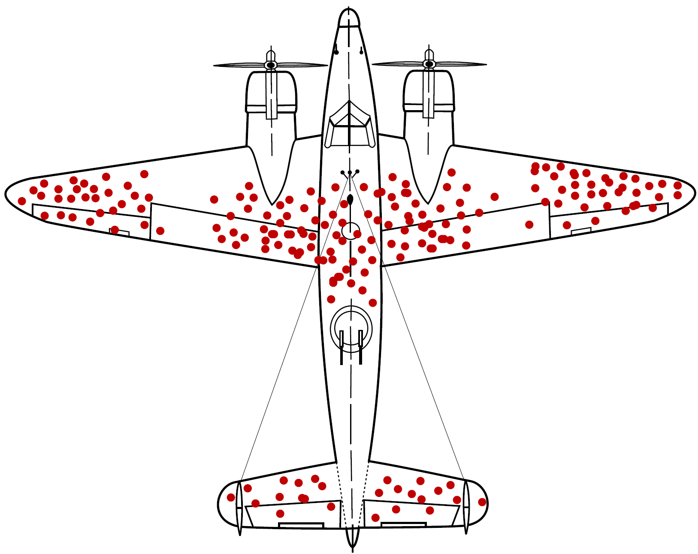
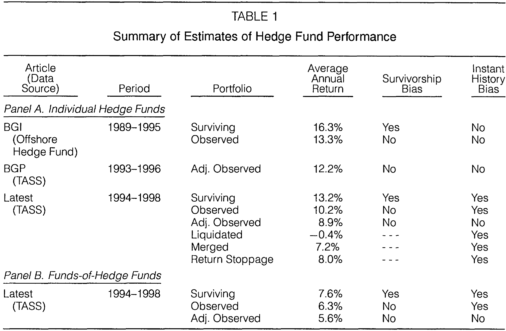
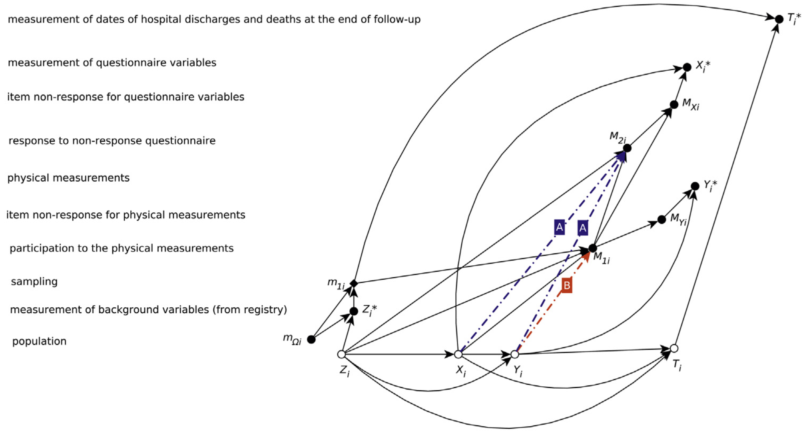
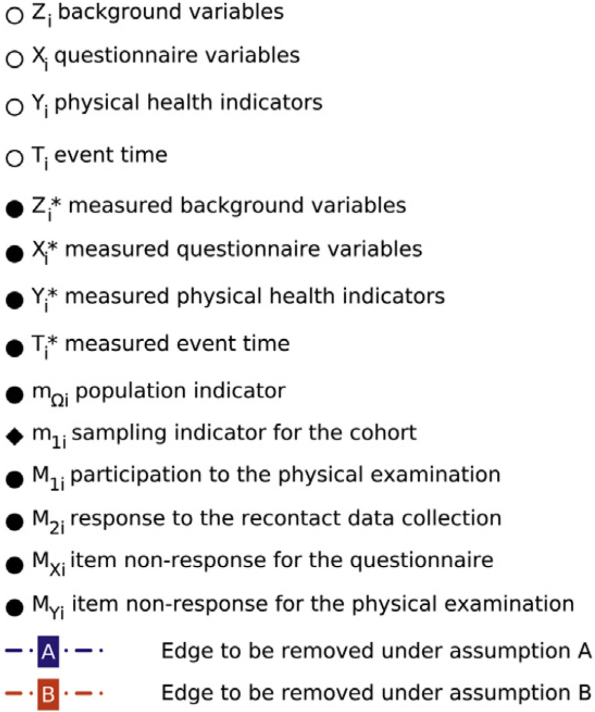

After completing this chapter, you will be able to:
Classify missing data mechanisms (MCAR, MAR, MNAR) and understand when each is ignorable for inference.
Recognize and quantify biases from missing data, including survivorship bias, instant history bias, and selection bias.
Apply appropriate techniques for handling missing data (complete case analysis, imputation, weighting, model-based procedures).
Implement multiple imputation workflows and understand their assumptions and uncertainty.
Critically evaluate claims based on incomplete data and perform sensitivity analyses.
Note
This chapter addresses a ubiquitous problem in real-world data analysis: missing data. We’ll see through concrete examples how missing data can severely bias results, learn to classify different mechanisms that generate missingness, and explore practical methods for dealing with incomplete data. The material is enriched with findings from Fung and Hsieh (2000) and Karvanen et al. (2016).
12.2 Introduction: The Hidden Cost of Missing Data
Missing data are ubiquitous in real-world applications. They are caused by limitations and defects of sensors, people failing to respond to surveys, entities disappearing in the middle of a long-term study, and countless other reasons.
Data that are missing randomly are often benign: the law of large numbers and the central limit theorem help manage their impact. But data that are missing systematically can be a serious problem, as the following examples will demonstrate.
12.2.1 Opening Example: Investment Fund Performance
Consider three hypothetical investment funds, all established simultaneously and investing in risky assets. After 3 years:
Fund A has done well, reaching an average annual return of 10%
Fund B has done OK, reaching an average annual return of 5%
Fund C has been terrible, making an average annual loss of -3%
It is unlikely that investors would stick with Fund C, so it is likely to have made a quiet exit – for example, by returning the funds to investors and liquidating.
Question: What is the average performance of the funds?
Looking at surviving funds only: (10 + 5)/2 = 7.5% per year
Looking at all funds that started: (10 + 5 - 3)/3 = 4% per year
The difference – a seemingly small 3.5 percentage points – is an example of survivorship bias. Over time, this translates to millions in misallocated capital if investors rely on biased performance data.
Survivorship Bias is Everywhere
Survivorship bias happens everywhere entities in a long-term study can selectively disappear:
Subjects in long-term medication or diet studies who drop out
Individuals who have reached success or fame (we don’t see those who tried and failed)
Companies that went bankrupt and were removed from stock indices
Startups that shut down before being included in databases
12.2.2 A Historical Example: The Bomber Plane Problem
You probably have heard this story: during World War II, the U.S. military analyzed damage patterns on bomber planes returning from missions to decide where to add armor.

Survivorship bias illustrated: bullet hole patterns on returning aircraft. The red areas show where returning planes were hit. Figure by Martin Grandjean (vector), McGeddon (picture), Cameron Moll (concept); CC BY-SA 4.0.
The intuitive approach would be to reinforce the areas with the most bullet holes – after all, those are clearly getting hit frequently. Instead, statistician Abraham Wald made a crucial observation: the data showed where planes could take damage and still return. The planes that were hit in other locations didn’t make it back and weren’t in the dataset.
According to this insight, engineers should reinforce the areas without bullet holes. Those were the critical spots where damage meant the plane never returned. This is a classic example of selection bias in missing data – the missing observations (planes that didn’t return) contained the most important information.
Finnish Terminology Reference
For Finnish-speaking students, here’s a reference table of key terms:
English
Finnish
Missing data
Puuttuva tieto / Puuttuvat havainnot
Survivorship bias
Selviytymisharha
Selection bias
Valikoitumisharha / Valintaharha
Instant history bias
Takautuvan historian harha
Missing completely at random (MCAR)
Täysin satunnaisesti puuttuva
Missing at random (MAR)
Satunnaisesti puuttuva
Missing not at random (MNAR)
Ei-satunnaisesti puuttuva
Ignorable
Sivuutettava
Imputation
Imputaatio / Puuttuvien arvojen korvaaminen
Multiple imputation
Moninkertainen imputointi
Censoring
Sensurointi
Complete case analysis
Täydellisten havaintojen analyysi
12.3 Case Studies: When Missing Data Misleads
12.3.1 Financial Performance Biases
All standard financial indices are susceptible to survivorship bias: unsuccessful companies and funds are regularly removed and replaced by more successful competitors.
The issue is made worse by instant history bias: when successful funds are added to a database, their historical returns from their incubation period are backfilled, but only the winners make it to the database.
Observed Hedge Fund Performance Biases
Fung and Hsieh (2000) provide quantitative estimates of these biases using hedge fund data:

Survivorship and instant history bias in hedge fund performance data. The table shows estimates from the TASS database for both hedge funds and commodity trading advisors (CTAs). Figure from Fung and Hsieh (2000).
Key findings:
Survivorship bias in hedge fund performance estimates: approximately 3% per year
Instant history bias: around 1.4% per year for hedge funds, 3.6% per year for CTAs
Dropout rates: About 20% per year for offshore hedge funds, 19% per year for CTAs
Further bias is caused by selection bias, where fund managers can decide whether to include their fund in the indices, with better-performing funds more likely to be included.
The Funds-of-Funds Solution
One way to understand the true bias is to track an investment in a “fund of funds” that invests in every fund in the market. The track records of funds-of-funds:
Retain the investment experience of hedge funds that went out of business due to poor performance
Include hedge funds that stopped reporting to database vendors because of good performance
Don’t suffer from instant history bias (past records are unaffected when adding new funds)
Fung and Hsieh (2000) use this approach to validate their bias estimates, finding that adjusted individual fund returns align well with funds-of-funds returns after accounting for portfolio management costs.
Types of Bias in Fund Data
Let’s break down the different biases more carefully:
Survivorship Bias: Failed funds disappear from databases. Studies comparing surviving funds to all funds (including defunct ones) consistently show that surviving funds have higher average returns – not because they’re better, but because the worst performers are missing from the data.
Instant History Bias: New hedge funds typically undergo an incubation period, trading on money from the managers’ friends and relatives. After compiling good performance, they market themselves to database vendors and hedge fund consultants. When vendors add these funds to their databases, they backfill the earlier returns during the incubation period. The median incubation period for hedge funds is about 343 days (roughly 11 months), during which only the successful funds survive to be added.
Selection Bias: Only funds with good performance want to be included in a database. However, this effect is somewhat mitigated because some managers with superior performance deliberately don’t participate – particularly when they’re not interested in attracting more capital.
Advanced: Multi-Period Sampling Bias
Many databases require funds to have a minimum track record (e.g., 24–36 months) before inclusion. This creates an additional upward bias: funds that survive the initial period tend to have better performance than those that failed early.
Fung and Hsieh (2000) quantify this multi-period sampling bias:
Hedge funds: Approximately +0.6% per year
Commodity trading advisors (CTAs): Approximately +0.1% per year
Practical implication: When constructing performance indices or conducting research, one should apply bias adjustments before imposing minimum history requirements. Otherwise, they would compound the survivorship bias with this additional selection effect.
12.3.2 Missing Responses in Health Surveys
Our second major example comes from population health surveillance. The FINRISK 2007 study investigated whether survey participants accurately represent the full population.
The FINRISK 2007 Study Design
In the 2007 study, a random sample of 10,000 individuals aged 25–74 were invited to participate in a health examination survey in Finland:
Both participants and non-participants were followed up for deaths and hospitalizations for 5 years
However, the participants did not appear to fully represent the study population. The full population had substantially higher death rates:
Estimates of health indicators for different participation groups.
Subset
Heavy alcohol users % (95% CI)
Daily smokers % (95% CI)
BMI ≥ 30 kg/m² % (95% CI)
Systolic blood pressure ≥ 140 mm Hg % (95% CI)
Deaths per 1,000 (95% CI)
Hospitalizations per 1,000 (95% CI)
Full cohort
—
—
—
—
33.0 (29.5–36.5)
1,157 (1,098–1,215)
Participants
5.2 (4.7–5.8)
21.8 (20.7–22.8)
21.0 (20.0–22.0)
30.7 (29.5–31.8)
22.1 (18.5–25.7)
1,052 (989–1,115)
A subset of health indicators by participation group. Participants and non-participants show markedly different mortality and hospitalization patterns (bolded). Data from Table 5 of Karvanen et al. (2016).
This raises serious questions about the validity of health indicators estimated using only the survey respondents.
Estimating Health Indicators Without Ground Truth
The primary goal of the FINRISK study was to estimate population-level prevalences of key health indicators:
Heavy alcohol use (self-reported questionnaire data)
Daily smoking (self-reported questionnaire data)
Obesity (BMI \geq 30 kg/m^2, measured)
High blood pressure (systolic BP \geq 140 mm Hg, measured)
Elevated total cholesterol (\geq 5.0 mmol/L, measured)
These variables are only available for study participants. We have no direct way to measure smoking or alcohol use for the 37% who didn’t participate. We cannot simply use participant-only estimates because, as the mortality data shows, non-participants are fundamentally different from participants.
While we don’t have ground truth for health behaviors among non-participants, we do have complete data on deaths and hospitalizations for everyone – both participants and non-participants. These follow-up outcomes provide a rare opportunity to validate different statistical methods by checking whether they recover the known truth. If a method works for deaths/hospitalizations (where we know the answer), we can have more confidence in its estimates for smoking and alcohol use (where we don’t).
Recontact Data
After the initial health examination closed, the FINRISK study team mailed the same questionnaire to non-participants and asked them to return it by mail (without attending the physical examination). This differs from earlier reminders – it aimed to collect at least questionnaire data on smoking, alcohol use, and other self-reported behaviors from those who wouldn’t participate fully.
An additional 473 non-participants returned the questionnaire (13% recontact response rate).
This created three distinct participation groups:
Estimates of health indicators for different participation groups.
Subset
Heavy alcohol users % (95% CI)
Daily smokers % (95% CI)
BMI ≥ 30 kg/m² % (95% CI)
Systolic blood pressure ≥ 140 mm Hg % (95% CI)
Deaths per 1,000 (95% CI)
Hospitalizations per 1,000 (95% CI)
Full cohort
—
—
—
—
33.0 (29.5–36.5)
1,157 (1,098–1,215)
Participants
5.2 (4.7–5.8)
21.8 (20.7–22.8)
21.0 (20.0–22.0)
30.7 (29.5–31.8)
22.1 (18.5–25.7)
1,052 (989–1,115)
Recontact respondents
6.4 (4.1–8.7)
33.4 (29.1–37.7)
—
—
55.1 (34.6–75.7)
1,357 (1,043–1,670)
A subset of health indicators broken down by all three participation groups. The three groups show quite different mortality and hospitalization patterns. Data from Table 5 of Karvanen et al. (2016).
Can the recontact respondents help us correct the selection bias in the participant-only estimates? To answer this, we need a formal framework for handling missing data.
A Causal Model for the Missing Data Process
Karvanen et al. (2016) built a causal model to describe the process responsible for missing responses:

Causal model with design for the FINRISK 2007 study. Variables include background information Z, questionnaire variables X, physical measurements Y, and participation indicators M_1 and M_2. Dashed edges marked ‘A’ and ‘B’ represent assumptions about the missing data mechanism. Figure from Karvanen et al. (2016).

Legend for the causal model. Open circles are unobserved variables, filled circles are observed variables, and diamonds are indicator/decision variables. Figure from Karvanen et al. (2016).
The model includes two key assumptions:
Assumption A: Among non-participants, the recontact response is independent of unobserved health variables X and Y, conditional on background variables Z (age, sex, region). This assumption was tested empirically using follow-up data and found to hold – recontact response did not predict mortality or morbidity among non-participants when adjusted for age and sex.
Assumption B: Physical measurements Y are independent of participation M_1 given questionnaire variables X and background Z. This assumption cannot be tested with available data but is necessary for estimating prevalences of physical health indicators.
The Multiple Imputation Approach
Using these assumptions, Karvanen et al. (2016) developed a multiple imputation method tailored to this missing data mechanism (MI-MNAR).1
Checking the method: To assess whether MI-MNAR works, they compared different approaches using deaths and hospitalizations – outcomes where ground truth was available for the full cohort:
Participants-only estimates: Deaths 22.1 per 1,000 (true value: 33.0) \times
MI-MAR (assumes missing at random): Deaths 23.6 per 1,000 \times
MI-MNAR (accounts for non-random missingness): Deaths 39.8 per 1,000 (CI overlaps 33.0) \checkmark
The participants-only and MI-MAR confidence intervals failed to capture the true values, revealing systematic bias. The MI-MNAR method performed better: its confidence intervals contained the true values for both deaths and hospitalizations. While this is suggestive rather than definitive validation, it provides evidence that the modeling assumptions are reasonable.
This encouraging performance on outcomes with known truth provides some confidence for applying MI-MNAR to estimate smoking and alcohol use (where we don’t have ground truth for non-participants):
Estimates of health indicators for different participation groups and population-level estimates with three MI methods.
Subset / Method
Heavy alcohol users % (95% CI)
Daily smokers % (95% CI)
BMI ≥ 30 kg/m² % (95% CI)
Systolic blood pressure ≥ 140 mm Hg % (95% CI)
Deaths per 1,000 (95% CI)
Hospitalizations per 1,000 (95% CI)
Full cohort
—
—
—
—
33.0 (29.5–36.5)
1,157 (1,098–1,215)
Participants
5.2 (4.7–5.8)
21.8 (20.7–22.8)
21.0 (20.0–22.0)
30.7 (29.5–31.8)
22.1 (18.5–25.7)
1,052 (989–1,115)
Recontact respondents
6.4 (4.1–8.7)
33.4 (29.1–37.7)
—
—
55.1 (34.6–75.7)
1,357 (1,043–1,670)
MI-MNAR
6.8 (5.6–8.1)
27.1 (24.8–29.3)
20.8 (19.7–22.0)
29.3 (28.1–30.6)
39.8 (32.7–47.0)
1,303 (1,175–1,431)
MI-MAR
5.5 (4.8–6.3)
23.4 (22.3–24.6)
20.4 (19.3–21.6)
29.1 (27.9–30.3)
23.6 (19.7–27.5)
1,027 (968–1,085)
MI-MAR, no recontact
5.4 (4.7–6.0)
23.4 (22.3–24.6)
20.1 (19.0–21.3)
29.1 (27.9–30.2)
23.4 (19.7–27.1)
1,030 (966–1,095)
A subset of health indicator estimates using different methods. The MI-MNAR method (which properly accounts for the non-random missing data mechanism) yields estimates that differ substantially from participants-only estimates for smoking and alcohol use. Data from Table 5 of Karvanen et al. (2016).
Notice the pattern: MI-MNAR estimates for smoking (27.1%) fall between participants (21.8%) and recontact respondents (33.4%), which makes sense given that non-participants are at higher risk. For obesity, blood pressure, and cholesterol, all methods agree because the recontact questionnaire lacked good proxy questions for these physical measurements.
Key insight: Even though only 13% of non-participants responded to recontact, this data dramatically improved the estimates. The assumption that recontact respondents can proxy all non-participants (conditional on age, sex, and region) found support in the mortality and hospitalization data, where this assumption led to estimates consistent with known truth.
The Value of Recontact
The FINRISK example demonstrates that all efforts to collect data on non-participants are likely to be useful, even if the recontact response rate remains low. A 13% response rate might seem discouraging, but it provided crucial information for correcting selection bias that would otherwise remain hidden.
12.4 Types and Mechanisms of Missing Data
Missing data can be classified in two complementary ways. Understanding both perspectives is crucial for choosing appropriate analysis methods.
12.4.1 Sources of Missing Data
First, we can classify missing data by how or why they arise. There are three common sources:
Censoring: Values exceed the range of possible observations. This could be due to limitations of a physical sensor, or due to limited follow-up time (e.g., a participant is still alive at the end of a medical study, so their death date is censored).
Unobserved in random sampling: In a study asking participants to rate 10 randomly selected movies, ratings for other movies are unobserved due to the study design – a form of planned missingness.
Unobserved in non-random sampling: Among the 10 selected movies, participants may fail to rate some. This is non-random missingness that may depend on whether they’ve seen the movie, liked it, etc.
Example: Classifying Sources of Missing Data
Classify each of the following into censoring, unobserved in random sampling, or unobserved in non-random sampling:
Faulty sensors cannot record extreme values
Limited number of sensors means not all locations are monitored
Medical tests are not performed on patients who appear healthy
Survey respondents are not included because they don’t have phones
Survey participants decline to answer sensitive questions
In a movie rating study, only 10 randomly selected movies are rated per participant
In the same study, participants skip rating movies they haven’t seen
Solution
Censoring: The sensor limitation causes systematic missingness for values beyond its range.
Unobserved in random sampling: If sensor placement is random, unmonitored locations are a planned random sample.
Unobserved in non-random sampling: Decision not to test depends on health status (unobserved outcome), creating non-random missingness.
Censoring or unobserved in non-random sampling: Lack of phone creates a systematic barrier; those without phones may differ systematically from those with phones.
Unobserved in non-random sampling: Non-response to sensitive questions likely correlates with the answer itself (e.g., those engaged in sensitive behavior may be less likely to report).
Unobserved in random sampling: By design, only a random subset of movies is rated.
Unobserved in non-random sampling: Whether someone has seen a movie is not random – it relates to preferences, which likely correlate with ratings.
12.4.2 Missing Data Mechanisms (MCAR, MAR, MNAR)
The classification above describes where missing data come from (operational perspective). We now turn to a complementary classification that describes the statistical relationship between missingness and data values (analytical perspective).
The mechanism classification has three categories:
MCAR (Missing Completely at Random): Missingness is independent of all data values
MAR (Missing at Random): Missingness depends on observed values only
MNAR (Missing Not at Random): Missingness depends on unobserved values
Key Distinction: Sources vs. Mechanisms
Sources (previous section): How or why does missingness arise? (censoring, study design, selective dropout)
Mechanisms (this section): Does missingness depend on data values? If so, which ones?
These are independent classification systems. The same source can correspond to different mechanisms:
Censoring (source) can be MCAR if sensors fail randomly, or MNAR if extreme values cause failures
Non-random sampling (source) is typically MAR or MNAR depending on what drives the dropout
Understanding the mechanism (MCAR/MAR/MNAR) determines which statistical methods are valid. We now define these three mechanisms formally.
Setup and Notation
Consider a dataset Y = (Y_{\text{obs}}, Y_{\text{mis}}), where:
Y_{\text{obs}} are the observed elements
Y_{\text{mis}} are the missing elements
R denotes response indicators: R_i = 1 if element i was observed, R_i = 0 if missing
The missingness mechanism is characterized by the probability distribution p(R \mid Y) – the probability that particular values are missing, given the full data (both observed and missing parts). The missingness of Y can be divided into 3 cases:
1. Missing Completely at Random (MCAR)
Missing Completely at Random (MCAR)
Data are MCAR if p(R \mid Y) = p(R). That is, R is independent of Y – the probability of missingness doesn’t depend on any data values, observed or missing.
Examples:
A lab technician accidentally spills coffee on a random stack of patient files
Survey responses are lost in transit by postal service errors
Database corruption affects randomly selected records
2. Missing at Random (MAR)
Missing at Random (MAR)
Data are MAR if p(R \mid Y) = p(R \mid Y_{\text{obs}}). The probability of a value being missing depends only on Y_{\text{obs}} but is independent of the missing values Y_{\text{mis}} themselves.
Examples:
Urban residents are more likely to respond to online surveys than rural residents (and location is recorded)
Younger participants are less likely to respond to follow-up questionnaires (and age is known)
People with higher education levels provide more complete financial data (and education is observed)
3. Missing Not at Random (MNAR)
Missing Not at Random (MNAR)
Data are MNAR if p(R \mid Y) depends on Y_{\text{mis}} as well as possibly Y_{\text{obs}}. The probability of missingness depends on the unobserved values themselves.
Examples:
People with severe symptoms are less likely to complete a symptom severity questionnaire
Individuals with very low test scores are more likely to skip remaining test questions
Employees with poor performance ratings are less likely to complete exit surveys
Fund C in our opening example (poor performance causes dropout)
Example: Classifying Missing Data Mechanisms
An e-commerce site is recording activity data from all its customers. Which missing data mechanism applies in the following settings?
Records for a period of time are lost because a disk got full.
Software error caused activity not to be recorded for customers who used a specific payment system.
No records can be made from users of an ad-blocker.
Solution
MCAR: The disk failure is unrelated to any customer characteristics or behavior. Missingness is completely random.
MAR: Missingness depends on the payment system used, which is an observed variable (the site knows which payment system each customer uses). Once we condition on payment system, missingness is random.
MNAR: Ad-blocker usage is typically unobserved by the site (that’s the point of ad-blockers!). The missingness depends on an unmeasured characteristic that likely correlates with the user’s privacy preferences and behavior.
12.4.3 Ignorability
The key statistical question about missing data is whether the mechanism is ignorable for a particular analysis.
A missingness mechanism is ignorable if we can perform valid inference without explicitly modeling the missingness process. Whether a mechanism is ignorable depends both on the missing data mechanism (MCAR, MAR, or MNAR) and on the statistical method used.
Complete case analysis (also called listwise deletion) is the simplest approach: analyze only observations with no missing values, discarding any row with missing data. Whether this approach is valid depends on the missing data mechanism:
MCAR is ignorable for all standard methods, including complete case analysis
MAR is ignorable for likelihood-based and multiple imputation methods, but not for complete case analysis
MNAR is generally not ignorable – we must explicitly model the missingness or make strong untestable assumptions
Why does ignorability depend on both the mechanism and the
method?
MCAR: Imagine randomly tossing out some survey
responses. The remaining responses are still representative – just a
smaller random sample. Any standard analysis works fine. Complete case
analysis is safe because we’re just working with a random subsample.
MAR: Now imagine younger people are less likely to
respond, but we know everyone’s age. If we account for age properly
(e.g., by including it in our model), we can correct for the bias.
Methods like multiple imputation do this conditioning automatically. But
complete case analysis doesn’t – it just throws away the younger
non-respondents, leaving us with an unrepresentative older sample.
MNAR: Suppose people with severe symptoms are less
likely to complete a symptom questionnaire, and we don’t observe their
symptoms. There’s no variable we can condition on to fix this – the bias
is baked into what we can’t see. We must either explicitly model why
people didn’t respond (which requires strong assumptions about the
unobserved) or find auxiliary data (like the FINRISK follow-up
data).
The technical definition of ignorability involves how the likelihood
factors.
Let \(L(\theta; Y_{\text{obs}}, R)\)
be the likelihood given observed data
\(Y_{\text{obs}}\) and missingness
indicators \(R\). The joint
distribution factors as:
\[f(Y, R \mid \theta, \phi) = f(Y \mid \theta) f(R \mid Y, \phi)\]
where \(\theta\) are parameters of
interest and \(\phi\) are parameters of
the missingness mechanism.
Ignorability holds when:
The parameters \(\theta\) and
\(\phi\) are distinct
(variation in one doesn’t constrain the other)
The missingness is MAR:
\(f(R \mid Y, \phi) = f(R \mid Y_{\text{obs}}, \phi)\)
Under these conditions, we can base inference on
\(f(Y_{\text{obs}} \mid \theta)\) and
ignore
\(f(R \mid Y_{\text{obs}}, \phi)\).
For MCAR, we have even stronger ignorability:
\(f(R \mid Y, \phi) = f(R \mid \phi)\),
so missingness is completely independent of the data.
To see ignorability in action, we simulate a simple regression
problem: predicting \(y\) from
\(x\) where the true relationship is
\(y = 2 + 3x + \text{noise}\). We know
the true slope is 3.0. We then artificially impose three different
missingness patterns and see whether complete case analysis recovers the
true slope:
MCAR: Randomly delete 30% of observations
(independent of any values)
MAR: Delete observations based on
\(x\) values (higher
\(x\) → more likely to be missing)
MNAR: Delete observations based on
\(y\) values (higher
\(y\) → more likely to be missing)
Since we control the data generation, we can compare the estimated
slopes to the known truth. We repeat each scenario 100 times to assess
variability and compute 95% confidence intervals.
import numpy as npimport matplotlib.pyplot as pltfrom scipy import statsrng = np.random.default_rng(42)n =10000n_sims =100# True data generating process: y = 2 + 3x + noisetrue_beta =3.0# Three missingness mechanismsdef create_mcar_mask(x, y, rng, p=0.3):"""MCAR: Missingness independent of everything"""return rng.random(len(x)) > pdef create_mar_mask(x, y, rng):"""MAR: Missingness depends on observed x""" p =1/ (1+ np.exp(-2*x)) # Higher x => much more missingreturn rng.random(len(x)) > pdef create_mnar_mask(x, y, rng):"""MNAR: Missingness depends on unobserved y""" p =1/ (1+ np.exp(-y/1.5)) # Higher y => more missingreturn rng.random(len(x)) > p# Run simulationsresults = {'MCAR': [], 'MAR': [], 'MNAR': []}for i inrange(n_sims):# Generate data x = rng.normal(size=n) y =2+3*x + rng.normal(size=n)# Estimate under each mechanismfor name, mask_fn in [('MCAR', create_mcar_mask), ('MAR', create_mar_mask), ('MNAR', create_mnar_mask)]: mask = mask_fn(x, y, rng) slope = stats.linregress(x[mask], y[mask]).slope results[name].append(slope)# Compute means and 95% CIsmeans = [true_beta] + [np.mean(results[k]) for k in ['MCAR', 'MAR', 'MNAR']]cis = [[true_beta, true_beta]] + [np.percentile(results[k], [2.5, 97.5]) for k in ['MCAR', 'MAR', 'MNAR']]ci_lower = [means[i] - cis[i][0] for i inrange(len(means))]ci_upper = [cis[i][1] - means[i] for i inrange(len(means))]# Visualize the biasfig, ax = plt.subplots(figsize=(7, 4.5))mechanisms = ['True β', 'MCAR', 'MAR', 'MNAR']colors = ['black', 'green', 'orange', 'red']bars = ax.bar(mechanisms, means, color=colors, alpha=0.7, edgecolor='black', yerr=[ci_lower, ci_upper], capsize=5, error_kw={'linewidth': 2})ax.axhline(true_beta, color='black', linestyle='--', linewidth=1, alpha=0.5, label='True value')ax.set_ylabel('Slope estimate (β)')ax.set_title('Complete Case Analysis: Bias and Uncertainty by Missing Data Mechanism')ax.set_ylim([2.5, 3.5])# Add value labelsfor i, (bar, val) inenumerate(zip(bars, means)): height = bar.get_height() ax.text(bar.get_x() + bar.get_width()/2., height +0.02,f'{val:.3f}', ha='center', va='bottom', fontsize=9)plt.grid(True, alpha=0.3, axis='y')plt.tight_layout()plt.show()print(f"True slope: {true_beta:.3f}")for name in ['MCAR', 'MAR', 'MNAR']: mean = np.mean(results[name]) ci_low, ci_high = np.percentile(results[name], [2.5, 97.5])print(f"{name}: {mean:.3f} (95% CI: [{ci_low:.3f}, {ci_high:.3f}], bias: {mean - true_beta:+.3f})")
The simulation demonstrates key differences across mechanisms:
MCAR is unbiased – the confidence interval contains
the true value
MAR is unbiased in this specific example due to a
special case: when missingness depends only on the predictor
\(x\) in a regression, complete case
analysis for the slope coefficient happens to be unbiased.
However, this is an exception, not the rule. Complete
case analysis under MAR is biased for most estimands (means, variances,
correlations) and would be biased even for regression if missingness
depended on an auxiliary variable or if we were estimating intercepts or
predictions.
MNAR shows substantial bias because missingness
directly depends on the unobserved outcome variable
\(y\), systematically excluding high
values
Key takeaway: Complete case analysis is safe only
under MCAR. Under MAR, complete case analysis is generally biased – the
regression slope example above is a rare exception. Under MNAR, complete
case analysis is almost always biased.
The Bottom Line: Ignoring the mechanism when it’s not ignorable leads to biased results. Always assess the likely mechanism before choosing an analysis method.
Common Misunderstanding
Even if a variable is fully observed, complete case analysis can bias its estimate when missingness in other variables depends on it. Deleting rows with any missing values changes the effective sampling design.
For example, if income is fully observed but wealthy people are less likely to respond to other survey questions, complete case analysis will undersample wealthy individuals and bias the income estimate downward.
12.5 Techniques for Dealing with Missing Data
Now that we understand missing data mechanisms, we turn to methods for handling incomplete data. The appropriate method depends on the mechanism and the analysis goals.
12.5.1 Overview of Approaches
Some common ways for dealing with missing data include:
Complete case analysis (listwise deletion): Ignore entries with missing data
Imputation: Fill in the missing values with estimated values
Weighting: Reweight complete cases to represent the full sample
Model-based procedures: Build a model for the observed data that accounts for missingness
We’ll explore each of these approaches.
12.5.2 Complete Case Analysis
Complete case analysis, as we saw before, simply discards any observation with missing data and analyzes the remaining complete observations.
When appropriate: MCAR with low missingness (a common rule of thumb is < 5%, though this depends on sample size and precision requirements)
Advantages:
Simple to implement
Honest uncertainty (standard errors reflect the actual sample size)
No additional modeling assumptions
Disadvantages:
Biased under MAR/MNAR
Loss of efficiency (throwing away data)
Different analyses may use different subsets of data (if missingness patterns differ across variables)
Example: In our fund performance example, using only surviving funds is complete case analysis. It’s severely biased because missingness (fund liquidation) depends on the outcome (poor performance).
Why the “Low Missingness” Threshold?
Even when MCAR holds, complete case analysis is only recommended when missingness is low (a common rule of thumb is < 5%, though this depends on sample size and study objectives). Two key considerations:
Efficiency: Even under MCAR, discarding observations wastes data. With very low missingness, you lose minimal precision. With higher missingness (e.g., 20-40%), you’re throwing away substantial information and widening confidence intervals unnecessarily.
Assumption credibility: The MCAR assumption is harder to defend when missingness is high. If you have substantial missing data, it’s worth investing effort in methods that work under weaker assumptions (MAR).
12.5.3 Imputation Methods
Imputation refers to a class of techniques for replacing missing values with estimated values. This makes subsequent analysis easy – after imputation, we have a seemingly complete dataset.
However, imputation comes with a serious warning:
The Seduction and Danger of Imputation
The idea of imputation is both seductive and dangerous. It is seductive because it can lull the user into the pleasurable state of believing that the data are complete after all, and it is dangerous because it lumps together situations where the problem is sufficiently minor that it can be legitimately handled in this way and situations where standard estimators applied to the real and imputed data have substantial biases.
– Dempster and Rubin (1983)
Simple (Single) Imputation
Common simple imputation methods include:
Mean/median imputation: Replace missing values with the mean or median of observed values
Hot deck imputation: Randomly select a similar record and use its value
Regression prediction: Predict missing values using observed relationships
The fundamental problem with single imputation: Treating imputed values as if they were observed leads to overconfident inference. The downstream analysis method is not aware of the larger uncertainty in the imputed values.
Additional caveats:
Replacing missing values using observed values for the same variable reduces variability – estimates of variation are biased
Imputation methods based on predicting missing values may work poorly if extrapolation is needed
Mean imputation breaks relationships between variables (imputed values have zero correlation with other variables)
Example: How Mean Imputation Distorts Variance
To see the problem concretely, suppose we have data on a variable X with true mean 50 and standard deviation 10. We randomly make 30% of values missing (MCAR), then impute them using the sample mean. What happens to the distribution?
Variance comparison:
True data : 80.10
Observed only : 81.85
Mean imputed : 49.11
Variance reduction: 38.7%
The spike at the mean in the imputed distribution reveals the problem: all 30 imputed values are identical (the mean), while the true values would have varied. This artificially reduces variance by a substantial fraction, leading to overconfident inference – confidence intervals that are too narrow and p-values that are too small.
Multiple Imputation (MI)
Multiple imputation addresses the fundamental flaw of single imputation: treating imputed values as known. Instead of creating one “completed” dataset, MI generates multiple plausible versions (typically m = 20-50) by drawing from the distribution of possible values given the observed data. Each imputed dataset is analyzed separately using standard methods, and results are combined using Rubin’s rules2, which properly account for two sources of uncertainty: variation between imputations (uncertainty about missing values) and variation within imputations (sampling uncertainty).
Modern software packages (e.g., mice in R, IterativeImputer in Python) make implementation straightforward.
Connection to Bootstrap and Bayesian Methods
MI resembles both bootstrap and Bayesian inference:
Like bootstrap, MI generates multiple datasets and pools results to capture uncertainty
Like Bayesian methods, MI draws from a distribution of plausible values (though MI uses a frequentist framework for combining results via Rubin’s rules rather than full posterior inference)
In fact, fully Bayesian approaches to missing data are ideal but computationally intensive. MI can be viewed as an efficient approximation that works within standard frequentist workflows.
12.5.4 Weighting Methods
The idea behind weighting is to reweight the complete cases so they represent the full sample.
Inverse probability weighting (IPW):
Estimate the probability of being observed: \hat{p}_i = P(R_i = 1 \mid X_i)
Weight each complete case by w_i = 1/\hat{p}_i
Analyze weighted data
Under MAR with a correctly specified model for P(R = 1 \mid X), this gives unbiased estimates.
Example: Sex Ratio Correction in Height Estimation
Assume we wish to estimate the average height of people living in a region. We gather a sample:
70 females with average height of 166 cm
30 males with average height of 180 cm
The sample average is: \overline{X} = \frac{70 \cdot 166 + 30 \cdot 180}{100} = 170.2 \text{ cm}
However, if we know the true sex distribution is around 50:50 (not 70:30), we would get a better estimate of the population average by reweighting the group averages with the population frequencies: \overline{X}_{\text{rw}} = \frac{50 \cdot 166 + 50 \cdot 180}{100} = 173.0 \text{ cm}
This is a simple example of weighting by known population distributions.
Similar approaches are commonly used with other background variables with known population distributions: age, socioeconomic status, political preferences, etc.
12.5.5 Model-Based Procedures
Model-based procedures define a statistical model for the observed data and infer the model parameters using standard techniques (often maximum likelihood via the EM algorithm, or Bayesian methods).
Such approaches can lead to more accurate results when the incompleteness of the data is properly accounted for in the model. However:
The procedures must be adapted to deal with missing data
Existing code and tools often cannot be used as-is
The FINRISK model discussed earlier is an example of a model-based procedure – it explicitly modeled the participation process and used multiple imputation within that framework.
Advanced: Selection Models vs. Pattern-Mixture Models
When modeling MNAR data, there are two main frameworks:
Selection models (like the FINRISK approach) factor the joint distribution as: f(Y, R) = f(Y) \cdot f(R \mid Y) They model the data generating process and then the selection/missingness mechanism conditional on the data.
Pattern-mixture models take the opposite factorization: f(Y, R) = f(Y \mid R) \cdot f(R) They model the distribution of data conditional on the missingness pattern, then combine across patterns.
Both approaches require untestable assumptions about the MNAR mechanism. In practice:
Selection models are more common and intuitive but can be computationally challenging
Pattern-mixture models can be easier to specify but require careful thought about combining patterns
Sensitivity analysis is essential – vary assumptions about the MNAR mechanism and assess how conclusions change
Implementation typically requires custom likelihood functions or Bayesian modeling tools (e.g., PyMC)
12.6 Practical Implementation
12.6.1 Decision Framework
When faced with missing data, follow this workflow:
1. Assess the missingness:
How much data is missing overall?
Which variables have missing values?
Are there patterns (e.g., variables missing together)?
What is the likely mechanism (MCAR, MAR, MNAR)?
2. Choose your method:
MCAR with low missingness: Complete case analysis is acceptable (rule of thumb: < 5%, but depends on sample size and precision needs)
MCAR with higher missingness: MI for efficiency gains
MAR: MI with rich predictors (include auxiliary variables)
MNAR: Requires special methods – sensitivity analysis, auxiliary data collection (like recontact), or explicit modeling of the missingness mechanism
3. Validate your approach:
Compare observed vs. imputed distributions (imputed values should look plausible)
Perform sensitivity analyses by varying assumptions
When possible, check against external data (like the FINRISK follow-up data)
Compare MI-MAR vs. MI-MNAR results to understand the impact of MNAR assumptions
Reporting Guidelines
Transparency is essential when dealing with missing data. A complete report should include:
Amount and pattern of missingness: Report overall percentage and range across variables
Assumed mechanism and justification: State whether you assume MCAR, MAR, or MNAR and why
Method used: Specify whether you used complete case, MI, weighting, or model-based methods
Implementation details:
For MI: number of imputations, imputation models, predictors used
For weighting: how weights were estimated
Software and packages used
Sensitivity analyses: Report results under different assumptions
Impact assessment: Describe how results differ from complete case analysis
12.6.2 Prevention is Better than Correction
The best way to handle missing data is to prevent it. A researcher can design data collection to minimize missingness:
Shorter surveys with clear, relevant questions (reduces respondent fatigue)
Incentives for completion (monetary, results reports, lottery entries)
Follow-up protocols for non-respondents (like FINRISK’s recontact approach)
Pilot testing to identify problematic questions before full deployment
Collect auxiliary data for non-respondents when possible – even limited data can dramatically improve estimates
The FINRISK example demonstrated that even a 13% recontact response rate provided crucial information for correcting selection bias. All efforts to collect data on non-participants are worthwhile.
When Standard Methods Fail
Be aware of situations where even proper methods struggle:
Very high missingness (> 40%): Results become increasingly dependent on modeling assumptions rather than data
MNAR without auxiliary information: No method can reliably recover the truth without strong, untestable assumptions about the missingness mechanism
Extrapolation beyond observed data: Imputation requiring predictions far outside the range of observed values is inherently unreliable
Fundamental limitation: No statistical method can recover information that isn’t there. If the missing data mechanism is MNAR and you have no auxiliary information about non-respondents, your estimates will be biased. The best you can do is acknowledge the limitation explicitly, perform sensitivity analyses showing results under different assumptions, and discuss the likely direction and magnitude of bias.
12.7 Chapter Summary and Connections
12.7.1 Key Concepts Review
Two classification systems:
Sources (how missingness arises): Censoring, random sampling, non-random sampling
Mechanisms (statistical relationship): MCAR, MAR, MNAR
Missing data mechanisms:
MCAR (Missing Completely at Random): Missingness independent of all data
MAR (Missing at Random): Missingness depends only on observed data
MNAR (Missing Not at Random): Missingness depends on unobserved values
Ignorability:
MCAR: Ignorable for all methods (complete case analysis is unbiased)
MAR: Ignorable for likelihood-based and MI methods, but NOT for complete case analysis
MNAR: Generally not ignorable – requires explicit modeling or auxiliary data
Key methods:
Complete case analysis: Only valid under MCAR with low missingness
Multiple imputation: The workhorse for MAR; generates m datasets, analyzes each, pools with Rubin’s rules
Weighting: Reweight complete cases to represent full sample (inverse probability weighting)
Model-based procedures: Explicitly model the missingness mechanism
Real-world impact:
Survivorship bias (investment funds): Using only surviving funds systematically overstates returns, misleading billions in investment decisions
Selection bias (FINRISK): Non-participants had substantially higher mortality; ignoring them produces dangerously wrong public health estimates of smoking and alcohol use
12.7.2 The Big Picture
Missing data is not a niche technical problem – it’s a fundamental challenge in real-world data analysis that affects investment decisions, public health policy, and life-and-death medical outcomes.
We have principled methods for handling missing data, but they require careful thought and honest assessment. The key: understand the missingness mechanism, choose methods accordingly, validate assumptions when possible, and report transparently about limitations. No statistical method can compensate for very high missingness or MNAR without auxiliary data – prevention and auxiliary data collection (like FINRISK’s recontact effort) are invaluable.
12.7.3 Common Pitfalls to Avoid
Assuming MCAR without evidence: Most real-world missing data are not MCAR. Compare complete vs. incomplete cases before assuming missingness is random.
Naïve imputation: Mean imputation destroys variance; single imputation understates uncertainty. Use proper multiple imputation.
Ignoring auxiliary information: Include variables that predict missingness in imputation models, even if they’re not in your analysis model. The FINRISK recontact data – just 13% response – dramatically improved estimates.
Hiding your assumptions: Document your missingness mechanism assumptions, methods used, and sensitivity analyses. Readers cannot judge validity without this transparency.
Misspecified models and false confidence: Imputation models can introduce bias if misspecified. When MNAR is plausible but you use MAR methods, your uncertainty is understated. Validate and conduct sensitivity analyses.
12.7.4 Chapter Connections
Previous (Chapters 5-11):
Chapters 5-7 developed parametric inference, estimation, and hypothesis testing – all assuming complete data. Missing data violates this assumption and can bias estimates, widen confidence intervals artificially (mean imputation), or lead to invalid p-values
Chapter 9’s regression methods are vulnerable to selection bias when missingness depends on outcomes (like Fund C’s poor performance leading to dropout) – complete case analysis can severely bias coefficient estimates
Chapter 11’s causal inference framework helps understand missing data mechanisms – whether missingness depends on observed vs. unobserved variables determines if we can recover valid estimates
This Chapter: Addressed missing data through three mechanisms (MCAR, MAR, MNAR) and their appropriate methods. We saw how survivorship and selection bias can severely distort inference, and learned when complete case analysis fails versus when multiple imputation or model-based approaches are needed.
Next (Ch. 13):
Chapter 13 (Experimental Design and Surveys) will show how proper study design minimizes missingness and enables causal inference – the principles here inform power calculations, sample size planning, and follow-up protocols to reduce missing data
12.7.5 Self-Test Problems
Mechanism Classification: For each scenario, identify whether the missing data are MCAR, MAR, or MNAR:
A thermometer fails to record temperatures below -20°C due to physical limitations
Survey respondents from rural areas are less likely to complete an online survey (and location is recorded)
People with high anxiety scores are less likely to complete an anxiety questionnaire (and anxiety is what we’re measuring)
Solution
Source: Censoring (instrument lower limit). Mechanism: MNAR, because the probability of missingness depends on the unobserved value itself (temperatures below −20°C are deterministically missing).
Mechanism: MAR. Missingness depends on location, which is observed; conditional on location, response is random.
Mechanism: MNAR. Missingness depends on the unobserved anxiety score itself.
Survivorship Bias Calculation: Suppose a database contains 100 funds at year 0. After 5 years, 60 funds survive. The surviving funds show an average return of 8% per year. If the 40 defunct funds had an average return of -2% per year, what is the survivorship bias?
This is even larger than the hedge fund bias estimated by Fung & Hsieh! If instant history bias adds +1.4% per year, the combined bias would be 5.4% per year.
Complete Case Bias: Assume income and health are positively correlated. A study measures income (fully observed) and health status (missing for 30% of respondents). Healthier people are more likely to respond. Will complete case analysis bias the income estimate? Why or why not?
Solution
Yes, complete case analysis will bias the income estimate even though income is fully observed. Since health and income are positively correlated (e.g., healthier people have higher income due to employment), the complete cases will oversample healthier individuals and thus oversample higher-income individuals. Deleting rows changes the effective sampling design, biasing estimates even for fully observed variables.
Ignorability and Valid Methods: Fill in which methods produce valid inference without explicitly modeling the missingness mechanism:
Mechanism
Complete Case Analysis
Likelihood/ML Methods
Multiple Imputation
MCAR
?
?
?
MAR
?
?
?
MNAR
?
?
?
Solution
Mechanism
Complete Case Analysis
Likelihood/ML Methods
Multiple Imputation
MCAR
\checkmark
\checkmark
\checkmark
MAR
\times
\checkmark
\checkmark
MNAR
\times
\times*
\times*
*MNAR requires explicitly modeling the missingness mechanism or bringing auxiliary data/assumptions (selection models, pattern-mixture models, sensitivity analyses).
Method Selection (True/False):
With 3% missing data and MCAR, complete case analysis is acceptable.
With 30% missing data and MAR, complete case analysis is generally unbiased.
With plausible MNAR and no auxiliary information, sensitivity analysis is essential.
Solution
True - Under MCAR with low missingness (rule of thumb: < 5%), complete case analysis is valid though less efficient.
False - Even under MAR, complete case analysis is biased. The high missingness (30%) makes efficiency loss severe, but MAR methods like multiple imputation are needed for validity.
True - With MNAR and no auxiliary data, results are sensitive to untestable assumptions. Sensitivity analysis showing results under different MNAR assumptions is essential for honest inference.
# Multiple Imputation with statsmodels MICE (imputation + pooling handled internally)import pandas as pd# Quick missingness checkdf.isnull().sum() # per-column countsdf.isnull().sum().sum() / df.size # overall proportionimport statsmodels.api as smfrom statsmodels.imputation.mice import MICEData, MICE# df: your pandas DataFrame with missing valuesmd = MICEData(df) # chained equations setup# Specify analysis modelmodel = sm.OLS.from_formula('y ~ x1 + x2', md)# Fit with multiple imputations; pooled inference returnedres = MICE(model, md, n_imputations=50, model_class=sm.OLS).fit()# res.summary() # pooled estimates and standard errors
Other Python options include
sklearn.impute.IterativeImputer and miceforest
(random forest-based).
library(mice)# Quick look at missingnesssummary(df)md.pattern(df)# Multiple Imputation with poolingimp <-mice(data = df,m =50, # number of imputationsmethod ="pmm", # predictive mean matching for continuous varsseed =123)fit <-with(imp, lm(y ~ x1 + x2))pooled <-pool(fit)summary(pooled)# Access a completed dataset if needed:# complete(imp, action = 1) # first imputation# complete(imp, action = "long") # all imputations in long format
Other R packages include Amelia and mi.
12.7.7 Connections to Source Material
This chapter synthesized material from multiple sources. The theoretical framework for missing data mechanisms (MCAR, MAR, MNAR) and ignorability follows Little & Rubin’s foundational Statistical Analysis with Missing Data. Two key empirical studies demonstrated real-world impact: Fung and Hsieh (2000) quantified survivorship and instant history bias in hedge fund databases, while Karvanen et al. (2016) demonstrated selection bias correction in the FINRISK health survey using multiple imputation for MNAR data.
12.7.8 Further Reading
Foundational Text: Little, R. J. A., & Rubin, D. B. (2019). Statistical Analysis with Missing Data (3rd ed.). Wiley.
Practical Guide: Van Buuren, S. (2018). Flexible Imputation of Missing Data (2nd ed.). CRC Press. Free online
Case Studies: The papers by Fung and Hsieh (2000) and Karvanen et al. (2016) provide excellent examples of missing data in practice.
Remember: Missing data is not just a technical nuisance – it’s a fundamental challenge that can determine whether your analysis leads to valid conclusions or serious errors. Understand the mechanism, choose methods appropriately, and always report your approach transparently!
Fung, William, and David A Hsieh. 2000. “Performance Characteristics of Hedge Funds and Commodity Funds: Natural Vs. Spurious Biases.”Journal of Financial and Quantitative Analysis 35 (3): 291–307.
Karvanen, Juha, Hanna Tolonen, Tommi Härkänen, Pekka Jousilahti, and Kari Kuulasmaa. 2016. “Selection Bias Was Reduced by Recontacting Nonparticipants.”Journal of Clinical Epidemiology 76: 209–17.
MI-MNAR = Multiple Imputation for data Missing Not at Random.↩︎
Rubin’s rules provide formulas for combining point estimates and variances from multiple imputed datasets. The total variance accounts for both within-imputation uncertainty (sampling variability) and between-imputation uncertainty (uncertainty about the missing values).↩︎
Model misspecification means using a model that doesn’t match the true data-generating process – e.g., assuming linearity when the relationship is nonlinear, or assuming independence when variables are correlated.↩︎
Source Code
---date: today---# Missing Data## Learning ObjectivesAfter completing this chapter, you will be able to:- **Classify missing data mechanisms** (MCAR, MAR, MNAR) and understand when each is ignorable for inference.- **Recognize and quantify biases** from missing data, including survivorship bias, instant history bias, and selection bias.- **Apply appropriate techniques** for handling missing data (complete case analysis, imputation, weighting, model-based procedures).- **Implement multiple imputation workflows** and understand their assumptions and uncertainty.- **Critically evaluate claims** based on incomplete data and perform sensitivity analyses.::: {.callout-note}This chapter addresses a ubiquitous problem in real-world data analysis: missing data. We'll see through concrete examples how missing data can severely bias results, learn to classify different mechanisms that generate missingness, and explore practical methods for dealing with incomplete data. The material is enriched with findings from @fung2000performance and @karvanen2016selection.:::## Introduction: The Hidden Cost of Missing DataMissing data are ubiquitous in real-world applications. They are caused by limitations and defects of sensors, people failing to respond to surveys, entities disappearing in the middle of a long-term study, and countless other reasons.Data that are missing randomly are often benign: the law of large numbers and the central limit theorem help manage their impact. But data that are missing *systematically* can be a serious problem, as the following examples will demonstrate.### Opening Example: Investment Fund PerformanceConsider three hypothetical investment funds, all established simultaneously and investing in risky assets. After 3 years:- **Fund A** has done well, reaching an average annual return of **10%**- **Fund B** has done OK, reaching an average annual return of **5%**- **Fund C** has been terrible, making an average annual loss of **-3%**It is unlikely that investors would stick with Fund C, so it is likely to have made a quiet exit -- for example, by returning the funds to investors and liquidating.**Question**: What is the average performance of the funds?- **Looking at surviving funds only**: (10 + 5)/2 = **7.5%** per year- **Looking at all funds that started**: (10 + 5 - 3)/3 = **4%** per yearThe difference -- a seemingly small 3.5 percentage points -- is an example of **survivorship bias**. Over time, this translates to millions in misallocated capital if investors rely on biased performance data.::: {.callout-warning}## Survivorship Bias is EverywhereSurvivorship bias happens everywhere entities in a long-term study can selectively disappear:- Subjects in long-term medication or diet studies who drop out- Individuals who have reached success or fame (we don't see those who tried and failed)- Companies that went bankrupt and were removed from stock indices- Startups that shut down before being included in databases:::### A Historical Example: The Bomber Plane ProblemYou probably have heard this story: during World War II, the U.S. military analyzed damage patterns on bomber planes returning from missions to decide where to add armor..](../figures/survivorship-bias.png){width=70%}The intuitive approach would be to reinforce the areas with the most bullet holes -- after all, those are clearly getting hit frequently. Instead, statistician [Abraham Wald](https://en.wikipedia.org/wiki/Abraham_Wald) made a crucial observation: the data showed where planes *could* take damage and still return. The planes that were hit in other locations didn't make it back and weren't in the dataset.According to this insight, engineers should reinforce the areas *without* bullet holes. Those were the critical spots where damage meant the plane never returned. This is a classic example of selection bias in missing data -- the missing observations (planes that didn't return) contained the most important information.::: {.callout-note collapse="true"}## Finnish Terminology ReferenceFor Finnish-speaking students, here's a reference table of key terms:| English | Finnish ||---------|---------|| Missing data | Puuttuva tieto / Puuttuvat havainnot || Survivorship bias | Selviytymisharha || Selection bias | Valikoitumisharha / Valintaharha || Instant history bias | Takautuvan historian harha || Missing completely at random (MCAR) | Täysin satunnaisesti puuttuva || Missing at random (MAR) | Satunnaisesti puuttuva || Missing not at random (MNAR) | Ei-satunnaisesti puuttuva || Ignorable | Sivuutettava || Imputation | Imputaatio / Puuttuvien arvojen korvaaminen || Multiple imputation | Moninkertainen imputointi || Censoring | Sensurointi || Complete case analysis | Täydellisten havaintojen analyysi |:::## Case Studies: When Missing Data Misleads### Financial Performance BiasesAll standard financial indices are susceptible to survivorship bias: unsuccessful companies and funds are regularly removed and replaced by more successful competitors.The issue is made worse by **instant history bias**: when successful funds are added to a database, their historical returns from their incubation period are backfilled, but only the winners make it to the database.#### Observed Hedge Fund Performance Biases@fung2000performance provide quantitative estimates of these biases using hedge fund data: for both hedge funds and commodity trading advisors (CTAs). Figure from @fung2000performance.](../figures/Fung_Hsieh2000_hedge_fund_bias.png){width=85%}**Key findings**:- **Survivorship bias** in hedge fund performance estimates: approximately **3% per year**- **Instant history bias**: around **1.4% per year** for hedge funds, **3.6% per year** for CTAs- **Dropout rates**: About **20% per year** for offshore hedge funds, **19% per year** for CTAsFurther bias is caused by **selection bias**, where fund managers can decide whether to include their fund in the indices, with better-performing funds more likely to be included.::: {.callout-note collapse="true"}## The Funds-of-Funds SolutionOne way to understand the true bias is to track an investment in a "fund of funds" that invests in every fund in the market. The track records of funds-of-funds:- Retain the investment experience of hedge funds that went out of business due to poor performance- Include hedge funds that stopped reporting to database vendors because of good performance- Don't suffer from instant history bias (past records are unaffected when adding new funds)@fung2000performance use this approach to validate their bias estimates, finding that adjusted individual fund returns align well with funds-of-funds returns after accounting for portfolio management costs.:::#### Types of Bias in Fund DataLet's break down the different biases more carefully:1. **Survivorship Bias**: Failed funds disappear from databases. Studies comparing surviving funds to all funds (including defunct ones) consistently show that surviving funds have higher average returns -- not because they're better, but because the worst performers are missing from the data.2. **Instant History Bias**: New hedge funds typically undergo an incubation period, trading on money from the managers' friends and relatives. After compiling good performance, they market themselves to database vendors and hedge fund consultants. When vendors add these funds to their databases, they backfill the earlier returns during the incubation period. The median incubation period for hedge funds is about **343 days** (roughly **11 months**), during which only the successful funds survive to be added.3. **Selection Bias**: Only funds with good performance want to be included in a database. However, this effect is somewhat mitigated because some managers with superior performance deliberately don't participate -- particularly when they're not interested in attracting more capital.::: {.callout-note collapse="true"}## Advanced: Multi-Period Sampling BiasMany databases require funds to have a minimum track record (e.g., 24–36 months) before inclusion. This creates an additional upward bias: funds that survive the initial period tend to have better performance than those that failed early.@fung2000performance quantify this **multi-period sampling bias**:- **Hedge funds**: Approximately **+0.6% per year**- **Commodity trading advisors (CTAs)**: Approximately **+0.1% per year****Practical implication**: When constructing performance indices or conducting research, one should apply bias adjustments *before* imposing minimum history requirements. Otherwise, they would compound the survivorship bias with this additional selection effect.:::### Missing Responses in Health SurveysOur second major example comes from population health surveillance. The FINRISK 2007 study investigated whether survey participants accurately represent the full population.#### The FINRISK 2007 Study DesignIn the 2007 study, a random sample of **10,000 individuals** aged 25–74 were invited to participate in a health examination survey in Finland:- **6,257 individuals participated** (63% participation rate -- globally remarkably high)- Both participants and non-participants were followed up for **deaths and hospitalizations** for 5 yearsHowever, the participants did not appear to fully represent the study population. The full population had substantially higher death rates:::: {style="font-size: 0.85em;"}**Estimates of health indicators for different participation groups.**| Subset | Heavy alcohol users % (95% CI) | Daily smokers % (95% CI) | BMI ≥ 30 kg/m² % (95% CI) | Systolic blood pressure ≥ 140 mm Hg % (95% CI) | Deaths per 1,000 (95% CI) | Hospitalizations per 1,000 (95% CI) || --------------------- | -----------------------------: | -----------------------: | ------------------------: | ---------------------------------------------: | ----------------------------------------: | ------------------------: | ----------------------------------: || Full cohort | — | — | — | — | **33.0** (29.5–36.5) | **1,157** (1,098–1,215) || Participants | 5.2 (4.7–5.8) | 21.8 (20.7–22.8) | 21.0 (20.0–22.0) | 30.7 (29.5–31.8) | **22.1** (18.5–25.7) | **1,052** (989–1,115) |A subset of health indicators by participation group. Participants and non-participants show markedly different mortality and hospitalization patterns (**bolded**). Data from Table 5 of @karvanen2016selection.:::This raises serious questions about the validity of health indicators estimated using only the survey respondents.::: {.callout-note}## Estimating Health Indicators Without Ground TruthThe primary goal of the FINRISK study was to estimate **population-level prevalences** of key health indicators:- **Heavy alcohol use** (self-reported questionnaire data)- **Daily smoking** (self-reported questionnaire data)- **Obesity** (BMI $\geq$ 30 kg/m$^2$, measured)- **High blood pressure** (systolic BP $\geq$ 140 mm Hg, measured)- **Elevated total cholesterol** ($\geq$ 5.0 mmol/L, measured)These variables are **only available for study participants**. We have no direct way to measure smoking or alcohol use for the 37% who didn't participate. We cannot simply use participant-only estimates because, as the mortality data shows, non-participants are fundamentally different from participants.While we don't have ground truth for health behaviors among non-participants, we **do** have complete data on **deaths and hospitalizations** for everyone -- both participants and non-participants. These follow-up outcomes provide a rare opportunity to validate different statistical methods by checking whether they recover the known truth. If a method works for deaths/hospitalizations (where we know the answer), we can have more confidence in its estimates for smoking and alcohol use (where we don't).:::#### Recontact DataAfter the initial health examination closed, **the FINRISK study team mailed the same questionnaire to non-participants** and asked them to return it by mail (without attending the physical examination). This differs from earlier reminders -- it aimed to collect at least questionnaire data on smoking, alcohol use, and other self-reported behaviors from those who wouldn't participate fully.An additional **473 non-participants returned the questionnaire** (13% recontact response rate).This created three distinct participation groups:::: {style="font-size: 0.85em;"}**Estimates of health indicators for different participation groups.**| Subset | Heavy alcohol users % (95% CI) | Daily smokers % (95% CI) | BMI ≥ 30 kg/m² % (95% CI) | Systolic blood pressure ≥ 140 mm Hg % (95% CI) | Deaths per 1,000 (95% CI) | Hospitalizations per 1,000 (95% CI) || --------------------- | -----------------------------: | -----------------------: | ------------------------: | ---------------------------------------------: | ----------------------------------------: | ------------------------: | ----------------------------------: || Full cohort | — | — | — | — | 33.0 (29.5–36.5) | 1,157 (1,098–1,215) || Participants | 5.2 (4.7–5.8) | 21.8 (20.7–22.8) | 21.0 (20.0–22.0) | 30.7 (29.5–31.8) | 22.1 (18.5–25.7) | 1,052 (989–1,115) || Recontact respondents | 6.4 (4.1–8.7) | 33.4 (29.1–37.7) | — | — | 55.1 (34.6–75.7) | 1,357 (1,043–1,670) |A subset of health indicators broken down by all three participation groups. The three groups show quite different mortality and hospitalization patterns. Data from Table 5 of @karvanen2016selection.:::Can the recontact respondents help us correct the selection bias in the participant-only estimates? To answer this, we need a formal framework for handling missing data.#### A Causal Model for the Missing Data Process@karvanen2016selection built a causal model to describe the process responsible for missing responses:::: {.columns}::: {.column width="72%"}{width=100%}:::::: {.column width="25%"}{width=100%}::::::The model includes two key assumptions:**Assumption A**: Among non-participants, the recontact response is independent of unobserved health variables $X$ and $Y$, conditional on background variables $Z$ (age, sex, region). This assumption was tested empirically using follow-up data and found to hold -- recontact response did not predict mortality or morbidity among non-participants when adjusted for age and sex.**Assumption B**: Physical measurements $Y$ are independent of participation $M_1$ given questionnaire variables $X$ and background $Z$. This assumption cannot be tested with available data but is necessary for estimating prevalences of physical health indicators.#### The Multiple Imputation ApproachUsing these assumptions, @karvanen2016selection developed a multiple imputation method tailored to this missing data mechanism (MI-MNAR).^[MI-MNAR = Multiple Imputation for data Missing Not at Random.]**Checking the method**: To assess whether MI-MNAR works, they compared different approaches using **deaths and hospitalizations** -- outcomes where ground truth was available for the full cohort:- **Participants-only estimates**: Deaths 22.1 per 1,000 (true value: 33.0) $\times$- **MI-MAR** (assumes missing at random): Deaths 23.6 per 1,000 $\times$- **MI-MNAR** (accounts for non-random missingness): Deaths 39.8 per 1,000 (CI overlaps 33.0) $\checkmark$The participants-only and MI-MAR confidence intervals failed to capture the true values, revealing systematic bias. The MI-MNAR method performed better: its confidence intervals contained the true values for both deaths and hospitalizations. While this is suggestive rather than definitive validation, it provides evidence that the modeling assumptions are reasonable.**This encouraging performance on outcomes with known truth provides some confidence for applying MI-MNAR to estimate smoking and alcohol use** (where we don't have ground truth for non-participants):::: {style="font-size: 0.85em;"}**Estimates of health indicators for different participation groups and population-level estimates with three MI methods.**| Subset / Method | Heavy alcohol users % (95% CI) | Daily smokers % (95% CI) | BMI ≥ 30 kg/m² % (95% CI) | Systolic blood pressure ≥ 140 mm Hg % (95% CI) | Deaths per 1,000 (95% CI) | Hospitalizations per 1,000 (95% CI) || --------------------- | -----------------------------: | -----------------------: | ------------------------: | ---------------------------------------------: | ------------------------: | ----------------------------------: || Full cohort | — | — | — | — | 33.0 (29.5–36.5) | 1,157 (1,098–1,215) || Participants | 5.2 (4.7–5.8) | 21.8 (20.7–22.8) | 21.0 (20.0–22.0) | 30.7 (29.5–31.8) | 22.1 (18.5–25.7) | 1,052 (989–1,115) || Recontact respondents | 6.4 (4.1–8.7) | 33.4 (29.1–37.7) | — | — | 55.1 (34.6–75.7) | 1,357 (1,043–1,670) || MI-MNAR | 6.8 (5.6–8.1) | 27.1 (24.8–29.3) | 20.8 (19.7–22.0) | 29.3 (28.1–30.6) | 39.8 (32.7–47.0) | 1,303 (1,175–1,431) || MI-MAR | 5.5 (4.8–6.3) | 23.4 (22.3–24.6) | 20.4 (19.3–21.6) | 29.1 (27.9–30.3) | 23.6 (19.7–27.5) | 1,027 (968–1,085) || MI-MAR, no recontact | 5.4 (4.7–6.0) | 23.4 (22.3–24.6) | 20.1 (19.0–21.3) | 29.1 (27.9–30.2) | 23.4 (19.7–27.1) | 1,030 (966–1,095) |A subset of health indicator estimates using different methods. The MI-MNAR method (which properly accounts for the non-random missing data mechanism) yields estimates that differ substantially from participants-only estimates for smoking and alcohol use. Data from Table 5 of @karvanen2016selection.:::Notice the pattern: MI-MNAR estimates for smoking (27.1%) fall between participants (21.8%) and recontact respondents (33.4%), which makes sense given that non-participants are at higher risk. For obesity, blood pressure, and cholesterol, all methods agree because the recontact questionnaire lacked good proxy questions for these physical measurements.**Key insight**: Even though only **13%** of non-participants responded to recontact, this data dramatically improved the estimates. The assumption that recontact respondents can proxy all non-participants (conditional on age, sex, and region) found support in the mortality and hospitalization data, where this assumption led to estimates consistent with known truth.::: {.callout-tip}## The Value of RecontactThe FINRISK example demonstrates that all efforts to collect data on non-participants are likely to be useful, even if the recontact response rate remains low. A 13% response rate might seem discouraging, but it provided crucial information for correcting selection bias that would otherwise remain hidden.:::## Types and Mechanisms of Missing DataMissing data can be classified in two complementary ways. Understanding both perspectives is crucial for choosing appropriate analysis methods.### Sources of Missing DataFirst, we can classify missing data by **how or why** they arise. There are three common sources:1. **Censoring**: Values exceed the range of possible observations. This could be due to limitations of a physical sensor, or due to limited follow-up time (e.g., a participant is still alive at the end of a medical study, so their death date is censored).2. **Unobserved in random sampling**: In a study asking participants to rate 10 randomly selected movies, ratings for other movies are unobserved due to the study design -- a form of planned missingness.3. **Unobserved in non-random sampling**: Among the 10 selected movies, participants may fail to rate some. This is non-random missingness that may depend on whether they've seen the movie, liked it, etc.::: {.callout-tip icon=false}## Example: Classifying Sources of Missing DataClassify each of the following into **censoring**, **unobserved in random sampling**, or **unobserved in non-random sampling**:1. Faulty sensors cannot record extreme values2. Limited number of sensors means not all locations are monitored3. Medical tests are not performed on patients who appear healthy4. Survey respondents are not included because they don't have phones5. Survey participants decline to answer sensitive questions6. In a movie rating study, only 10 randomly selected movies are rated per participant7. In the same study, participants skip rating movies they haven't seen::: {.callout-note collapse="true"}## Solution1. **Censoring**: The sensor limitation causes systematic missingness for values beyond its range.2. **Unobserved in random sampling**: If sensor placement is random, unmonitored locations are a planned random sample.3. **Unobserved in non-random sampling**: Decision not to test depends on health status (unobserved outcome), creating non-random missingness.4. **Censoring** or **unobserved in non-random sampling**: Lack of phone creates a systematic barrier; those without phones may differ systematically from those with phones.5. **Unobserved in non-random sampling**: Non-response to sensitive questions likely correlates with the answer itself (e.g., those engaged in sensitive behavior may be less likely to report).6. **Unobserved in random sampling**: By design, only a random subset of movies is rated.7. **Unobserved in non-random sampling**: Whether someone has seen a movie is not random -- it relates to preferences, which likely correlate with ratings.::::::### Missing Data Mechanisms (MCAR, MAR, MNAR)The classification above describes **where** missing data come from (operational perspective). We now turn to a complementary classification that describes the **statistical relationship** between missingness and data values (analytical perspective).The mechanism classification has three categories:- **MCAR** (Missing Completely at Random): Missingness is independent of all data values- **MAR** (Missing at Random): Missingness depends on observed values only- **MNAR** (Missing Not at Random): Missingness depends on unobserved values::: {.callout-note}## Key Distinction: Sources vs. Mechanisms- **Sources** (previous section): How or why does missingness arise? (censoring, study design, selective dropout)- **Mechanisms** (this section): Does missingness depend on data values? If so, which ones?These are **independent classification systems**. The same source can correspond to different mechanisms:- Censoring (source) can be MCAR if sensors fail randomly, or MNAR if extreme values cause failures- Non-random sampling (source) is typically MAR or MNAR depending on what drives the dropout:::Understanding the mechanism (MCAR/MAR/MNAR) determines which statistical methods are valid. We now define these three mechanisms formally.#### Setup and NotationConsider a dataset $Y = (Y_{\text{obs}}, Y_{\text{mis}})$, where:- $Y_{\text{obs}}$ are the observed elements- $Y_{\text{mis}}$ are the missing elements- $R$ denotes response indicators: $R_i = 1$ if element $i$ was observed, $R_i = 0$ if missingThe missingness mechanism is characterized by the probability distribution $p(R \mid Y)$ -- the probability that particular values are missing, given the full data (both observed and missing parts). The missingness of $Y$ can be divided into 3 cases:#### 1. Missing Completely at Random (MCAR)::: {.definition}**Missing Completely at Random (MCAR)**Data are MCAR if $p(R \mid Y) = p(R)$. That is, $R$ is independent of $Y$ -- the probability of missingness doesn't depend on any data values, observed or missing.:::**Examples**:- A lab technician accidentally spills coffee on a random stack of patient files- Survey responses are lost in transit by postal service errors- Database corruption affects randomly selected records#### 2. Missing at Random (MAR)::: {.definition}**Missing at Random (MAR)**Data are MAR if $p(R \mid Y) = p(R \mid Y_{\text{obs}})$. The probability of a value being missing depends only on $Y_{\text{obs}}$ but is independent of the missing values $Y_{\text{mis}}$ themselves.:::**Examples**:- Urban residents are more likely to respond to online surveys than rural residents (and location is recorded)- Younger participants are less likely to respond to follow-up questionnaires (and age is known)- People with higher education levels provide more complete financial data (and education is observed)#### 3. Missing Not at Random (MNAR)::: {.definition}**Missing Not at Random (MNAR)**Data are MNAR if $p(R \mid Y)$ depends on $Y_{\text{mis}}$ as well as possibly $Y_{\text{obs}}$. The probability of missingness depends on the unobserved values themselves.:::**Examples**:- People with severe symptoms are less likely to complete a symptom severity questionnaire- Individuals with very low test scores are more likely to skip remaining test questions- Employees with poor performance ratings are less likely to complete exit surveys- Fund C in our opening example (poor performance causes dropout)::: {.callout-tip icon=false}## Example: Classifying Missing Data MechanismsAn e-commerce site is recording activity data from all its customers. Which missing data mechanism applies in the following settings?1. Records for a period of time are lost because a disk got full.2. Software error caused activity not to be recorded for customers who used a specific payment system.3. No records can be made from users of an ad-blocker.::: {.callout-note collapse="true"}## Solution1. **MCAR**: The disk failure is unrelated to any customer characteristics or behavior. Missingness is completely random.2. **MAR**: Missingness depends on the payment system used, which is an *observed* variable (the site knows which payment system each customer uses). Once we condition on payment system, missingness is random.3. **MNAR**: Ad-blocker usage is typically *unobserved* by the site (that's the point of ad-blockers!). The missingness depends on an unmeasured characteristic that likely correlates with the user's privacy preferences and behavior.::::::### IgnorabilityThe key statistical question about missing data is whether the mechanism is **ignorable** for a particular analysis.A missingness mechanism is **ignorable** if we can perform valid inference without explicitly modeling the missingness process. Whether a mechanism is ignorable depends both on the missing data mechanism (MCAR, MAR, or MNAR) and on the statistical method used.**Complete case analysis** (also called listwise deletion) is the simplest approach: analyze only observations with no missing values, discarding any row with missing data. Whether this approach is valid depends on the missing data mechanism:- **MCAR** is ignorable for all standard methods, including complete case analysis- **MAR** is ignorable for likelihood-based and multiple imputation methods, but **not** for complete case analysis- **MNAR** is generally not ignorable -- we must explicitly model the missingness or make strong untestable assumptions::: {.tabbed-content}## IntuitiveWhy does ignorability depend on both the mechanism and the method?**MCAR**: Imagine randomly tossing out some survey responses. The remaining responses are still representative -- just a smaller random sample. Any standard analysis works fine. Complete case analysis is safe because we're just working with a random subsample.**MAR**: Now imagine younger people are less likely to respond, but we know everyone's age. If we account for age properly (e.g., by including it in our model), we can correct for the bias. Methods like multiple imputation do this conditioning automatically. But complete case analysis doesn't -- it just throws away the younger non-respondents, leaving us with an unrepresentative older sample.**MNAR**: Suppose people with severe symptoms are less likely to complete a symptom questionnaire, and we don't observe their symptoms. There's no variable we can condition on to fix this -- the bias is baked into what we can't see. We must either explicitly model why people didn't respond (which requires strong assumptions about the unobserved) or find auxiliary data (like the FINRISK follow-up data).## MathematicalThe technical definition of ignorability involves how the likelihood factors.Let $L(\theta; Y_{\text{obs}}, R)$ be the likelihood given observed data $Y_{\text{obs}}$ and missingness indicators $R$. The joint distribution factors as:$$f(Y, R \mid \theta, \phi) = f(Y \mid \theta) f(R \mid Y, \phi)$$where $\theta$ are parameters of interest and $\phi$ are parameters of the missingness mechanism.**Ignorability** holds when:1. The parameters $\theta$ and $\phi$ are **distinct** (variation in one doesn't constrain the other)2. The missingness is **MAR**: $f(R \mid Y, \phi) = f(R \mid Y_{\text{obs}}, \phi)$Under these conditions, we can base inference on $f(Y_{\text{obs}} \mid \theta)$ and ignore $f(R \mid Y_{\text{obs}}, \phi)$.For MCAR, we have even stronger ignorability: $f(R \mid Y, \phi) = f(R \mid \phi)$, so missingness is completely independent of the data.## ComputationalTo see ignorability in action, we simulate a simple regression problem: predicting $y$ from $x$ where the true relationship is $y = 2 + 3x + \text{noise}$. We know the true slope is 3.0. We then artificially impose three different missingness patterns and see whether complete case analysis recovers the true slope:- **MCAR**: Randomly delete 30% of observations (independent of any values)- **MAR**: Delete observations based on $x$ values (higher $x$ → more likely to be missing)- **MNAR**: Delete observations based on $y$ values (higher $y$ → more likely to be missing)Since we control the data generation, we can compare the estimated slopes to the known truth. We repeat each scenario 100 times to assess variability and compute 95% confidence intervals.```{python}#| echo: true#| fig-width: 7#| fig-height: 4.5import numpy as npimport matplotlib.pyplot as pltfrom scipy import statsrng = np.random.default_rng(42)n =10000n_sims =100# True data generating process: y = 2 + 3x + noisetrue_beta =3.0# Three missingness mechanismsdef create_mcar_mask(x, y, rng, p=0.3):"""MCAR: Missingness independent of everything"""return rng.random(len(x)) > pdef create_mar_mask(x, y, rng):"""MAR: Missingness depends on observed x""" p =1/ (1+ np.exp(-2*x)) # Higher x => much more missingreturn rng.random(len(x)) > pdef create_mnar_mask(x, y, rng):"""MNAR: Missingness depends on unobserved y""" p =1/ (1+ np.exp(-y/1.5)) # Higher y => more missingreturn rng.random(len(x)) > p# Run simulationsresults = {'MCAR': [], 'MAR': [], 'MNAR': []}for i inrange(n_sims):# Generate data x = rng.normal(size=n) y =2+3*x + rng.normal(size=n)# Estimate under each mechanismfor name, mask_fn in [('MCAR', create_mcar_mask), ('MAR', create_mar_mask), ('MNAR', create_mnar_mask)]: mask = mask_fn(x, y, rng) slope = stats.linregress(x[mask], y[mask]).slope results[name].append(slope)# Compute means and 95% CIsmeans = [true_beta] + [np.mean(results[k]) for k in ['MCAR', 'MAR', 'MNAR']]cis = [[true_beta, true_beta]] + [np.percentile(results[k], [2.5, 97.5]) for k in ['MCAR', 'MAR', 'MNAR']]ci_lower = [means[i] - cis[i][0] for i inrange(len(means))]ci_upper = [cis[i][1] - means[i] for i inrange(len(means))]# Visualize the biasfig, ax = plt.subplots(figsize=(7, 4.5))mechanisms = ['True β', 'MCAR', 'MAR', 'MNAR']colors = ['black', 'green', 'orange', 'red']bars = ax.bar(mechanisms, means, color=colors, alpha=0.7, edgecolor='black', yerr=[ci_lower, ci_upper], capsize=5, error_kw={'linewidth': 2})ax.axhline(true_beta, color='black', linestyle='--', linewidth=1, alpha=0.5, label='True value')ax.set_ylabel('Slope estimate (β)')ax.set_title('Complete Case Analysis: Bias and Uncertainty by Missing Data Mechanism')ax.set_ylim([2.5, 3.5])# Add value labelsfor i, (bar, val) inenumerate(zip(bars, means)): height = bar.get_height() ax.text(bar.get_x() + bar.get_width()/2., height +0.02,f'{val:.3f}', ha='center', va='bottom', fontsize=9)plt.grid(True, alpha=0.3, axis='y')plt.tight_layout()plt.show()print(f"True slope: {true_beta:.3f}")for name in ['MCAR', 'MAR', 'MNAR']: mean = np.mean(results[name]) ci_low, ci_high = np.percentile(results[name], [2.5, 97.5])print(f"{name}: {mean:.3f} (95% CI: [{ci_low:.3f}, {ci_high:.3f}], bias: {mean - true_beta:+.3f})")```The simulation demonstrates key differences across mechanisms:- **MCAR** is unbiased -- the confidence interval contains the true value- **MAR** is unbiased in this specific example due to a special case: when missingness depends only on the predictor $x$ in a regression, complete case analysis for the slope coefficient happens to be unbiased. **However, this is an exception, not the rule.** Complete case analysis under MAR is biased for most estimands (means, variances, correlations) and would be biased even for regression if missingness depended on an auxiliary variable or if we were estimating intercepts or predictions.- **MNAR** shows substantial bias because missingness directly depends on the unobserved outcome variable $y$, systematically excluding high values**Key takeaway**: Complete case analysis is safe only under MCAR. Under MAR, complete case analysis is generally biased -- the regression slope example above is a rare exception. Under MNAR, complete case analysis is almost always biased.:::**The Bottom Line**: Ignoring the mechanism when it's not ignorable leads to biased results. Always assess the likely mechanism before choosing an analysis method.::: {.callout-warning}## Common MisunderstandingEven if a variable is fully observed, **complete case analysis can bias its estimate** when missingness in other variables depends on it. Deleting rows with any missing values changes the effective sampling design.For example, if income is fully observed but wealthy people are less likely to respond to other survey questions, complete case analysis will undersample wealthy individuals and bias the income estimate downward.:::## Techniques for Dealing with Missing DataNow that we understand missing data mechanisms, we turn to methods for handling incomplete data. The appropriate method depends on the mechanism and the analysis goals.### Overview of ApproachesSome common ways for dealing with missing data include:1. **Complete case analysis** (listwise deletion): Ignore entries with missing data2. **Imputation**: Fill in the missing values with estimated values3. **Weighting**: Reweight complete cases to represent the full sample4. **Model-based procedures**: Build a model for the observed data that accounts for missingnessWe'll explore each of these approaches.### Complete Case AnalysisComplete case analysis, as we saw before, simply discards any observation with missing data and analyzes the remaining complete observations.**When appropriate**: MCAR with low missingness (a common rule of thumb is < 5%, though this depends on sample size and precision requirements)**Advantages**:- Simple to implement- Honest uncertainty (standard errors reflect the actual sample size)- No additional modeling assumptions**Disadvantages**:- Biased under MAR/MNAR- Loss of efficiency (throwing away data)- Different analyses may use different subsets of data (if missingness patterns differ across variables)**Example**: In our fund performance example, using only surviving funds is complete case analysis. It's severely biased because missingness (fund liquidation) depends on the outcome (poor performance).::: {.callout-note}## Why the "Low Missingness" Threshold?Even when MCAR holds, complete case analysis is only recommended when missingness is low (a common rule of thumb is < 5%, though this depends on sample size and study objectives). Two key considerations:1. **Efficiency**: Even under MCAR, discarding observations wastes data. With very low missingness, you lose minimal precision. With higher missingness (e.g., 20-40%), you're throwing away substantial information and widening confidence intervals unnecessarily.2. **Assumption credibility**: The MCAR assumption is harder to defend when missingness is high. If you have substantial missing data, it's worth investing effort in methods that work under weaker assumptions (MAR).:::### Imputation MethodsImputation refers to a class of techniques for replacing missing values with estimated values. This makes subsequent analysis easy -- after imputation, we have a seemingly complete dataset.However, imputation comes with a serious warning:::: {.callout-caution}## The Seduction and Danger of Imputation> The idea of imputation is both seductive and dangerous. It is seductive because it can lull the user into the pleasurable state of believing that the data are complete after all, and it is dangerous because it lumps together situations where the problem is sufficiently minor that it can be legitimately handled in this way and situations where standard estimators applied to the real and imputed data have substantial biases.-- Dempster and Rubin (1983):::#### Simple (Single) ImputationCommon simple imputation methods include:- **Mean/median imputation**: Replace missing values with the mean or median of observed values- **Hot deck imputation**: Randomly select a similar record and use its value- **Regression prediction**: Predict missing values using observed relationships**The fundamental problem with single imputation**: Treating imputed values as if they were observed leads to **overconfident** inference. The downstream analysis method is not aware of the larger uncertainty in the imputed values.**Additional caveats**:- Replacing missing values using observed values for the same variable **reduces variability** -- estimates of variation are biased- Imputation methods based on predicting missing values may work poorly if extrapolation is needed- Mean imputation **breaks relationships** between variables (imputed values have zero correlation with other variables)::: {.callout-tip icon=false}## Example: How Mean Imputation Distorts VarianceTo see the problem concretely, suppose we have data on a variable $X$ with true mean 50 and standard deviation 10. We randomly make 30% of values missing (MCAR), then impute them using the sample mean. What happens to the distribution?```{python}#| echo: true#| fig-width: 7#| fig-height: 4import numpy as npimport matplotlib.pyplot as pltrng = np.random.default_rng(123)# True datan =100X_true = rng.normal(50, 10, n)# Create MCAR missingness (30% missing)missing_mask = rng.random(n) <0.3X_observed = X_true.copy()X_observed[missing_mask] = np.nan# Mean imputationX_mean_imputed = X_observed.copy()mean_val = np.nanmean(X_observed)X_mean_imputed[missing_mask] = mean_val# Compare distributionsfig, (ax1, ax2) = plt.subplots(1, 2, figsize=(10, 4))# Plot 1: Histogramsax1.hist(X_true, bins=15, alpha=0.5, label='True data', edgecolor='black')ax1.hist(X_mean_imputed, bins=15, alpha=0.5, label='After mean imputation', edgecolor='black')ax1.axvline(mean_val, color='red', linestyle='--', label=f'Imputed value ({mean_val:.1f})')ax1.set_xlabel('X')ax1.set_ylabel('Frequency')ax1.set_title('Mean Imputation Distorts the Distribution')ax1.legend()ax1.grid(True, alpha=0.3)# Plot 2: Variance comparisonvariances = {'True data': np.var(X_true),'Observed only': np.nanvar(X_observed),'Mean imputed': np.var(X_mean_imputed)}bars = ax2.bar(range(len(variances)), list(variances.values()), color=['black', 'blue', 'red'], alpha=0.7, edgecolor='black')ax2.set_xticks(range(len(variances)))ax2.set_xticklabels(list(variances.keys()), rotation=15, ha='right')ax2.set_ylabel('Variance')ax2.set_title('Mean Imputation Artificially Reduces Variance')ax2.grid(True, alpha=0.3, axis='y')# Add value labelsfor bar, val inzip(bars, variances.values()): height = bar.get_height() ax2.text(bar.get_x() + bar.get_width()/2., height +2,f'{val:.1f}', ha='center', va='bottom')plt.tight_layout()plt.show()print("Variance comparison:")for name, var in variances.items():print(f" {name:15s}: {var:.2f}")print(f"\nVariance reduction: {(1- variances['Mean imputed']/variances['True data'])*100:.1f}%")```The spike at the mean in the imputed distribution reveals the problem: all 30 imputed values are identical (the mean), while the true values would have varied. This artificially reduces variance by a substantial fraction, leading to overconfident inference -- confidence intervals that are too narrow and p-values that are too small.:::#### Multiple Imputation (MI)Multiple imputation addresses the fundamental flaw of single imputation: treating imputed values as known. Instead of creating one "completed" dataset, MI generates multiple plausible versions (typically $m = 20-50$) by drawing from the distribution of possible values given the observed data. Each imputed dataset is analyzed separately using standard methods, and results are combined using **Rubin's rules**^[Rubin's rules provide formulas for combining point estimates and variances from multiple imputed datasets. The total variance accounts for both within-imputation uncertainty (sampling variability) and between-imputation uncertainty (uncertainty about the missing values).], which properly account for two sources of uncertainty: variation between imputations (uncertainty about missing values) and variation within imputations (sampling uncertainty).Modern software packages (e.g., `mice` in R, `IterativeImputer` in Python) make implementation straightforward.::: {.callout-note collapse="true"}## Connection to Bootstrap and Bayesian MethodsMI resembles both bootstrap and Bayesian inference:- Like **bootstrap**, MI generates multiple datasets and pools results to capture uncertainty- Like **Bayesian methods**, MI draws from a distribution of plausible values (though MI uses a frequentist framework for combining results via Rubin's rules rather than full posterior inference)In fact, fully Bayesian approaches to missing data are ideal but computationally intensive. MI can be viewed as an efficient approximation that works within standard frequentist workflows.:::### Weighting MethodsThe idea behind weighting is to reweight the complete cases so they represent the full sample.**Inverse probability weighting (IPW)**:- Estimate the probability of being observed: $\hat{p}_i = P(R_i = 1 \mid X_i)$- Weight each complete case by $w_i = 1/\hat{p}_i$- Analyze weighted dataUnder MAR with a correctly specified model for $P(R = 1 \mid X)$, this gives unbiased estimates.::: {.callout-tip icon=false}## Example: Sex Ratio Correction in Height EstimationAssume we wish to estimate the average height of people living in a region. We gather a sample:- 70 females with average height of 166 cm- 30 males with average height of 180 cmThe sample average is:$$\overline{X} = \frac{70 \cdot 166 + 30 \cdot 180}{100} = 170.2 \text{ cm}$$However, if we know the true sex distribution is around 50:50 (not 70:30), we would get a better estimate of the population average by reweighting the group averages with the population frequencies:$$\overline{X}_{\text{rw}} = \frac{50 \cdot 166 + 50 \cdot 180}{100} = 173.0 \text{ cm}$$This is a simple example of weighting by known population distributions.:::Similar approaches are commonly used with other background variables with known population distributions: age, socioeconomic status, political preferences, etc.### Model-Based ProceduresModel-based procedures define a statistical model for the observed data and infer the model parameters using standard techniques (often maximum likelihood via the EM algorithm, or Bayesian methods).Such approaches can lead to more accurate results when the incompleteness of the data is properly accounted for in the model. However:- The procedures must be adapted to deal with missing data- Existing code and tools often cannot be used as-is- Model misspecification^[Model misspecification means using a model that doesn't match the true data-generating process -- e.g., assuming linearity when the relationship is nonlinear, or assuming independence when variables are correlated.] can lead to biasThe FINRISK model discussed earlier is an example of a model-based procedure -- it explicitly modeled the participation process and used multiple imputation within that framework.::: {.callout-note collapse="true"}## Advanced: Selection Models vs. Pattern-Mixture ModelsWhen modeling MNAR data, there are two main frameworks:**Selection models** (like the FINRISK approach) factor the joint distribution as:$$f(Y, R) = f(Y) \cdot f(R \mid Y)$$They model the data generating process and then the selection/missingness mechanism conditional on the data.**Pattern-mixture models** take the opposite factorization:$$f(Y, R) = f(Y \mid R) \cdot f(R)$$They model the distribution of data conditional on the missingness pattern, then combine across patterns.Both approaches require untestable assumptions about the MNAR mechanism. In practice:- **Selection models** are more common and intuitive but can be computationally challenging- **Pattern-mixture models** can be easier to specify but require careful thought about combining patterns- **Sensitivity analysis** is essential -- vary assumptions about the MNAR mechanism and assess how conclusions change- Implementation typically requires custom likelihood functions or Bayesian modeling tools (e.g., [PyMC](https://www.pymc.io/projects/examples/en/latest/howto/Missing_Data_Imputation.html)):::## Practical Implementation### Decision FrameworkWhen faced with missing data, follow this workflow:**1. Assess the missingness**:- How much data is missing overall?- Which variables have missing values?- Are there patterns (e.g., variables missing together)?- What is the likely mechanism (MCAR, MAR, MNAR)?**2. Choose your method**:- **MCAR with low missingness**: Complete case analysis is acceptable (rule of thumb: < 5%, but depends on sample size and precision needs)- **MCAR with higher missingness**: MI for efficiency gains- **MAR**: MI with rich predictors (include auxiliary variables)- **MNAR**: Requires special methods -- sensitivity analysis, auxiliary data collection (like recontact), or explicit modeling of the missingness mechanism**3. Validate your approach**:- Compare observed vs. imputed distributions (imputed values should look plausible)- Perform sensitivity analyses by varying assumptions- When possible, check against external data (like the FINRISK follow-up data)- Compare MI-MAR vs. MI-MNAR results to understand the impact of MNAR assumptions::: {.callout-note collapse="true"}## Reporting GuidelinesTransparency is essential when dealing with missing data. A complete report should include:1. **Amount and pattern of missingness**: Report overall percentage and range across variables2. **Assumed mechanism and justification**: State whether you assume MCAR, MAR, or MNAR and why3. **Method used**: Specify whether you used complete case, MI, weighting, or model-based methods4. **Implementation details**: - For MI: number of imputations, imputation models, predictors used - For weighting: how weights were estimated - Software and packages used5. **Sensitivity analyses**: Report results under different assumptions6. **Impact assessment**: Describe how results differ from complete case analysis:::### Prevention is Better than CorrectionThe best way to handle missing data is to prevent it. A researcher can design data collection to minimize missingness:- **Shorter surveys** with clear, relevant questions (reduces respondent fatigue)- **Incentives for completion** (monetary, results reports, lottery entries)- **Follow-up protocols** for non-respondents (like FINRISK's recontact approach)- **Pilot testing** to identify problematic questions before full deployment- **Collect auxiliary data** for non-respondents when possible -- even limited data can dramatically improve estimatesThe FINRISK example demonstrated that even a 13% recontact response rate provided crucial information for correcting selection bias. All efforts to collect data on non-participants are worthwhile.::: {.callout-caution}## When Standard Methods FailBe aware of situations where even proper methods struggle:- **Very high missingness** (> 40%): Results become increasingly dependent on modeling assumptions rather than data- **MNAR without auxiliary information**: No method can reliably recover the truth without strong, untestable assumptions about the missingness mechanism- **Extrapolation beyond observed data**: Imputation requiring predictions far outside the range of observed values is inherently unreliable**Fundamental limitation**: No statistical method can recover information that isn't there. If the missing data mechanism is MNAR and you have no auxiliary information about non-respondents, your estimates will be biased. The best you can do is acknowledge the limitation explicitly, perform sensitivity analyses showing results under different assumptions, and discuss the likely direction and magnitude of bias.:::## Chapter Summary and Connections### Key Concepts Review**Two classification systems**:- **Sources** (how missingness arises): Censoring, random sampling, non-random sampling- **Mechanisms** (statistical relationship): MCAR, MAR, MNAR**Missing data mechanisms**:- **MCAR** (Missing Completely at Random): Missingness independent of all data- **MAR** (Missing at Random): Missingness depends only on observed data- **MNAR** (Missing Not at Random): Missingness depends on unobserved values**Ignorability**:- **MCAR**: Ignorable for all methods (complete case analysis is unbiased)- **MAR**: Ignorable for likelihood-based and MI methods, but NOT for complete case analysis- **MNAR**: Generally not ignorable -- requires explicit modeling or auxiliary data**Key methods**:- **Complete case analysis**: Only valid under MCAR with low missingness- **Multiple imputation**: The workhorse for MAR; generates m datasets, analyzes each, pools with Rubin's rules- **Weighting**: Reweight complete cases to represent full sample (inverse probability weighting)- **Model-based procedures**: Explicitly model the missingness mechanism**Real-world impact**:- **Survivorship bias** (investment funds): Using only surviving funds systematically overstates returns, misleading billions in investment decisions- **Selection bias** (FINRISK): Non-participants had substantially higher mortality; ignoring them produces dangerously wrong public health estimates of smoking and alcohol use### The Big PictureMissing data is not a niche technical problem -- it's a fundamental challenge in real-world data analysis that affects investment decisions, public health policy, and life-and-death medical outcomes.We have principled methods for handling missing data, but they require careful thought and honest assessment. The key: understand the missingness mechanism, choose methods accordingly, validate assumptions when possible, and report transparently about limitations. No statistical method can compensate for very high missingness or MNAR without auxiliary data -- prevention and auxiliary data collection (like FINRISK's recontact effort) are invaluable.### Common Pitfalls to Avoid1. **Assuming MCAR without evidence**: Most real-world missing data are not MCAR. Compare complete vs. incomplete cases before assuming missingness is random.2. **Naïve imputation**: Mean imputation destroys variance; single imputation understates uncertainty. Use proper multiple imputation.3. **Ignoring auxiliary information**: Include variables that predict missingness in imputation models, even if they're not in your analysis model. The FINRISK recontact data -- just 13% response -- dramatically improved estimates.4. **Hiding your assumptions**: Document your missingness mechanism assumptions, methods used, and sensitivity analyses. Readers cannot judge validity without this transparency.5. **Misspecified models and false confidence**: Imputation models can introduce bias if misspecified. When MNAR is plausible but you use MAR methods, your uncertainty is understated. Validate and conduct sensitivity analyses.### Chapter Connections**Previous (Chapters 5-11):**- Chapters 5-7 developed parametric inference, estimation, and hypothesis testing -- all assuming complete data. Missing data violates this assumption and can bias estimates, widen confidence intervals artificially (mean imputation), or lead to invalid p-values- Chapter 9's regression methods are vulnerable to selection bias when missingness depends on outcomes (like Fund C's poor performance leading to dropout) -- complete case analysis can severely bias coefficient estimates- Chapter 11's causal inference framework helps understand missing data mechanisms -- whether missingness depends on observed vs. unobserved variables determines if we can recover valid estimates**This Chapter:**Addressed missing data through three mechanisms (MCAR, MAR, MNAR) and their appropriate methods. We saw how survivorship and selection bias can severely distort inference, and learned when complete case analysis fails versus when multiple imputation or model-based approaches are needed.**Next (Ch. 13):**- Chapter 13 (Experimental Design and Surveys) will show how proper study design minimizes missingness and enables causal inference -- the principles here inform power calculations, sample size planning, and follow-up protocols to reduce missing data### Self-Test Problems1. **Mechanism Classification**: For each scenario, identify whether the missing data are MCAR, MAR, or MNAR: a) A thermometer fails to record temperatures below -20°C due to physical limitations b) Survey respondents from rural areas are less likely to complete an online survey (and location is recorded) c) People with high anxiety scores are less likely to complete an anxiety questionnaire (and anxiety is what we're measuring) ::: {.callout-note collapse="true"} ## Solution a) **Source:** Censoring (instrument lower limit). **Mechanism:** MNAR, because the probability of missingness depends on the unobserved value itself (temperatures below −20°C are deterministically missing). b) **Mechanism:** MAR. Missingness depends on location, which is observed; conditional on location, response is random. c) **Mechanism:** MNAR. Missingness depends on the unobserved anxiety score itself. :::2. **Survivorship Bias Calculation**: Suppose a database contains 100 funds at year 0. After 5 years, 60 funds survive. The surviving funds show an average return of 8% per year. If the 40 defunct funds had an average return of -2% per year, what is the survivorship bias? ::: {.callout-note collapse="true"} ## Solution - Surviving portfolio: 8% (based on 60 funds) - True portfolio: (60 × 8% + 40 × (-2%))/100 = (480 - 80)/100 = 4% - Survivorship bias: 8% - 4% = **4% per year** This is even larger than the hedge fund bias estimated by Fung & Hsieh! If instant history bias adds +1.4% per year, the combined bias would be 5.4% per year. :::3. **Complete Case Bias**: Assume income and health are positively correlated. A study measures income (fully observed) and health status (missing for 30% of respondents). Healthier people are more likely to respond. Will complete case analysis bias the income estimate? Why or why not? ::: {.callout-note collapse="true"} ## Solution Yes, complete case analysis will bias the income estimate even though income is fully observed. Since health and income are positively correlated (e.g., healthier people have higher income due to employment), the complete cases will oversample healthier individuals and thus oversample higher-income individuals. Deleting rows changes the effective sampling design, biasing estimates even for fully observed variables. :::4. **Ignorability and Valid Methods**: Fill in which methods produce valid inference without explicitly modeling the missingness mechanism: | Mechanism | Complete Case Analysis | Likelihood/ML Methods | Multiple Imputation | |-----------|:----------------------:|:---------------------:|:-------------------:| | MCAR | ? | ? | ? | | MAR | ? | ? | ? | | MNAR | ? | ? | ? | ::: {.callout-note collapse="true"} ## Solution | Mechanism | Complete Case Analysis | Likelihood/ML Methods | Multiple Imputation | |-----------|:----------------------:|:---------------------:|:-------------------:| | MCAR | $\checkmark$ | $\checkmark$ | $\checkmark$ | | MAR | $\times$ | $\checkmark$ | $\checkmark$ | | MNAR | $\times$ | $\times$* | $\times$* | *MNAR requires explicitly modeling the missingness mechanism or bringing auxiliary data/assumptions (selection models, pattern-mixture models, sensitivity analyses). :::5. **Method Selection (True/False)**: a) With 3% missing data and MCAR, complete case analysis is acceptable. b) With 30% missing data and MAR, complete case analysis is generally unbiased. c) With plausible MNAR and no auxiliary information, sensitivity analysis is essential. ::: {.callout-note collapse="true"} ## Solution a) **True** - Under MCAR with low missingness (rule of thumb: < 5%), complete case analysis is valid though less efficient. b) **False** - Even under MAR, complete case analysis is biased. The high missingness (30%) makes efficiency loss severe, but MAR methods like multiple imputation are needed for validity. c) **True** - With MNAR and no auxiliary data, results are sensitive to untestable assumptions. Sensitivity analysis showing results under different MNAR assumptions is essential for honest inference. :::### Python and R Reference::: {.content-visible when-format="html"}::: {.tabbed-content}## Python```python# Multiple Imputation with statsmodels MICE (imputation + pooling handled internally)import pandas as pd# Quick missingness checkdf.isnull().sum() # per-column countsdf.isnull().sum().sum() / df.size # overall proportionimport statsmodels.api as smfrom statsmodels.imputation.mice import MICEData, MICE# df: your pandas DataFrame with missing valuesmd = MICEData(df) # chained equations setup# Specify analysis modelmodel = sm.OLS.from_formula('y ~ x1 + x2', md)# Fit with multiple imputations; pooled inference returnedres = MICE(model, md, n_imputations=50, model_class=sm.OLS).fit()# res.summary() # pooled estimates and standard errors```Other Python options include `sklearn.impute.IterativeImputer` and `miceforest` (random forest-based).## R```rlibrary(mice)# Quick look at missingnesssummary(df)md.pattern(df)# Multiple Imputation with poolingimp <-mice(data = df,m =50, # number of imputationsmethod ="pmm", # predictive mean matching for continuous varsseed =123)fit <-with(imp, lm(y ~ x1 + x2))pooled <-pool(fit)summary(pooled)# Access a completed dataset if needed:# complete(imp, action = 1) # first imputation# complete(imp, action = "long") # all imputations in long format```Other R packages include `Amelia` and `mi`.::::::::: {.content-visible when-format="pdf"}::: {.callout-note}## Python and R Reference CodePython and R code examples for handling missing data can be found in the HTML version of these notes.::::::### Connections to Source MaterialThis chapter synthesized material from multiple sources. The theoretical framework for missing data mechanisms (MCAR, MAR, MNAR) and ignorability follows Little & Rubin's foundational *Statistical Analysis with Missing Data*. Two key empirical studies demonstrated real-world impact: @fung2000performance quantified survivorship and instant history bias in hedge fund databases, while @karvanen2016selection demonstrated selection bias correction in the FINRISK health survey using multiple imputation for MNAR data.### Further Reading- **Foundational Text**: Little, R. J. A., & Rubin, D. B. (2019). *Statistical Analysis with Missing Data* (3rd ed.). Wiley.- **Practical Guide**: Van Buuren, S. (2018). *Flexible Imputation of Missing Data* (2nd ed.). CRC Press. [Free online](https://stefvanbuuren.name/fimd/)- **Case Studies**: The papers by @fung2000performance and @karvanen2016selection provide excellent examples of missing data in practice.---*Remember: Missing data is not just a technical nuisance -- it's a fundamental challenge that can determine whether your analysis leads to valid conclusions or serious errors. Understand the mechanism, choose methods appropriately, and always report your approach transparently!*